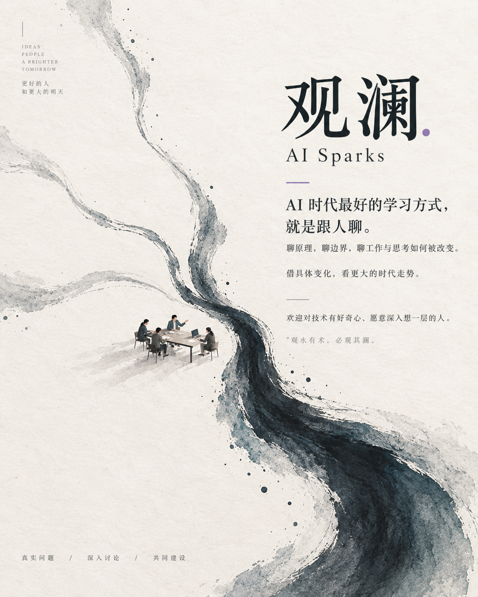

AI 写得更快，人为什么没更轻松？
- 起初的问题
- 有人觉得个人开发明显变快，有人发现写代码的时间转成了审代码。
- 新增的视角
- 个人产出和团队交付是不同尺度。需求、等待、审查与交接，都可能决定整体速度。
- 仍待验证
- 记录中没有完整工时对照，不能由几次体感算出公司的提效比例。
AI Sparks
AI 时代最好的学习方式，
就是跟人聊。
围绕真实的问题，把不同人的经验和判断放在一起碰撞。聊原理，聊边界，聊工作、产品、组织与思考如何被改变。
借具体变化，看更大的时代走势。

我们不一定是专家。希望这里聚集的是一群对技术有好奇心、愿意多想一层的人：观察变化、提出问题、交换经验、彼此修正判断，也尽可能亲手参与和建设这个时代。
一个模型更新、一次工作提效、一段失败的尝试，都可以成为讨论的起点。沿着具体变化继续追问：它为什么发生？影响了谁？哪些判断需要重新检验？
名字取意于《孟子·尽心上》“观水有术，必观其澜”。我们借这个意象表达自己的主张：借具体变化，看更大的时代走势。
从档案里挑出三场讨论，看最初的判断怎样被不同经验补充。下面是整理后的阅读线索；原话、语境和没有解决的部分，都可以继续查。
从已有档案选出三个值得继续追踪的问题。下面的验证方式是建议，欢迎带来案例、反例和新的限制条件。
这里先收录数读的两项工具实践。群友的尝试也值得留下：想解决什么、怎么试、哪里失败、讨论怎样改变了做法，以及后来发生了什么。
明确每轮产物、人的参与和验证方式，让复杂任务能够继续改进，也让接手的人知道下一步做什么。
看理念来源、用法与项目链接 →先理解对方要做什么、缺哪些背景，再决定怎么解释；保留必要事实、关键条件和没有验证的部分。
看理念来源、用法与项目链接 →如果你已经在群里，可以分享一次尝试：目标是什么、实际结果怎样、卡在哪里、希望大家补充哪种视角。也欢迎邀请同样好奇、愿意深入交流的朋友。
尚未加入的朋友，可以联系邀请你阅读这份档案的群友，了解参与方式。
七章导读串起讨论脉络；完整议题、时间线、成员视角和原话出处，帮助你回到具体语境。精选入口之外的内容仍然保留。
档案基于 2026 年 7 月 12 日至 9 月 15 日的本地导出，首页不代表实时群动态。观点梳理与实践建议不等于群内共识或已完成的实验。
顺着下面七章读，就能知道大家在聊什么。每章后面的小问题都可以展开，里面有完整论证、不同声音、没有解决的部分和原话。想找某个人、某次争论或某一天，再用目录回头找。
这是一份群聊分析，不是 7,731 条消息的全文公开备份，也不是全体群友的共同声明。查看材料范围与整理说明 ↗
群里最早的话题很简单：谁更强、谁更快、谁更便宜。用久以后才发现，同一个模型放到不同工具、不同任务里，体验能差很多。真正该比的，是它能不能把你的事做完。
七月的聊天里，模型名、额度、速度和价格占了很大篇幅。有人觉得 Codex 好用，有人更喜欢 Claude；有人拿一个 Bug 两分钟修好，也有人让模型跑一个多小时还没结果。后来大家慢慢发现，这些体验没法直接拼成一张“模型排行榜”。任务不同、客户端不同、有没有工具权限、上下文有没有带过去，都会改变结果。[067][074][075][076][078]
所以更实用的问题变成了：这件事最后有没有做成？花了多少调用费？等了多久？人又花了多少时间补救？这也是为什么“便宜模型”不一定真的便宜——如果省了几块钱，却多花一小时返工，总成本反而更高。[050][043]
另一个很现实的问题是普通人能不能上手。Ida 提醒过，很多同事连 Skill 是什么都不知道。重度用户聊 Agent、Token、MCP 很自然，但产品真正落地时，第一步往往不是再多一个功能，而是让一个第一次打开的人知道：它能帮我干什么，我下一步该点哪里。[040][002]
我已经听很多人说到这个了 而且最重要的是 他们真的可以用起来
但发现其实也没有提多少，有些东西还是得人来干， 人相当于传话筒，上限倒是提高了，代码还得审查，之前写代码的时间转换成了审代码的时间
说实话，代码层面我是真很难体会出SOTA和非SOTA的区别了，这个只能是长周期任务才能体现 短期内我真看不出来😂
多个 Agent 之间来回切换 还是有点难受， 得维护好一套全局的上下文才行
8 月 19 日，J1_Hee 说自己已经改用 Codex；数读却觉得，写代码和讨论产品、梳理需求不是一回事。北鱼也说，短代码任务未必看得出差距，任务拉长以后才更明显。他们未必谁错了，只是拿来比较的工作不同。这些是个人体感，不是一场条件相同的测评。[076][077][078][067]
它听懂目标了吗？能用到需要的工具吗？长任务能做完吗？会不会想了很久，却交不出可验收的东西？Recover 讲过一次修 Bug 的经历：继续重试没有解决，换模型后很快做完。这个例子值得记住，但不能靠一次成功给模型排永久名次。[074][075]
先说明任务、使用的客户端、限制条件和怎样才算成功，再谈哪个工具适合。这样别人才能判断：你的好体验，换到我的工作里是否还成立。比起找一个包办所有任务的“最强模型”，给自己的不同工作找到合适的工具更实用。
说实话，代码层面我是真很难体会出SOTA和非SOTA的区别了，这个只能是长周期任务才能体现 短期内我真看不出来😂
这就不得不提我昨天修一个数据系统的bug，glm5.2烧了十块钱，还没给我修好，逼得我上了k12
两分钟解决
我现在用codex，不用claude了
codex适合当程序员
但是很多需要思考和产品侧、需求侧的分析场景 我觉得远不如cc
有人偏爱编程执行，有人需要需求讨论。同一个排行榜，回答不了所有人的工作问题。
8 月 19 日，J1_Hee 说自己已经转向 Codex；数读却区分了编程与产品、需求分析场景，认为工具在不同任务上的体验不一样。北鱼还提出，短代码任务不容易拉开差距，长周期任务才更容易体现差异。这些是各自的使用体感，不是相互排斥的统一测评。[076][077][078][067]
把“哪个更聪明”拆成具体问题：能否理解目标、能否使用所需工具、能否完成长任务、是否过度思考、交付是否可验收。Recover 的一次修 Bug 经历展示了换模型可能比继续重试更划算，但单个案例只能提供线索，不能推导永久排名。[074][075]
与其寻找一个统治所有场景的模型，不如建立自己的任务—工具配对。讨论模型时同时交代任务类型、客户端、约束、成功标准；这样别人才能判断这个体验能否迁移到自己这里。
北鱼说过“浪费时间也是一种苦”；在另一段讨论里，他抱怨加上复杂配置后，修一个 Bug 可能就要数小时。Recover 也遇到花了钱还没修好、换个模型很快解决的情况。大家真正要算的，不只是会员多少钱，而是把一次任务做成，总共付出了什么。[050][042][074][075]
除了调用费用，还要算等待、检查、补救、切换工具，以及错误造成的损失。这只是帮助思考的成本清单，不是精确的财务公式。临诗予说，原来写代码的时间有一部分变成了审代码的时间：机器写得快，不代表人忙得少。[043]
哪些任务可以用便宜模型，什么时候该升级，反复失败到什么程度应当停下来，都要看实际记录。为了省一次调用而多返工一小时，不一定划算；反过来，一个简单任务也不一定值得用最贵的模型。不能把“继续试”默认当成唯一办法。
GPT 5.6 我感觉我都不敢让他搭配superpower 不然每次修个BUG，都是几小时起步 麻了 =_=
浪费时间也是一种苦
这就不得不提我昨天修一个数据系统的bug，glm5.2烧了十块钱，还没给我修好，逼得我上了k12
两分钟解决
但发现其实也没有提多少，有些东西还是得人来干， 人相当于传话筒，上限倒是提高了，代码还得审查，之前写代码的时间转换成了审代码的时间
便宜的调用不一定便宜；等待、重试、返工和人的注意力也会消耗资源。
北鱼在一次工具体验讨论中说：“浪费时间也是一种苦。”另一次谈到复杂配置时，又抱怨修一个 Bug 可能耗时数小时。Recover 则描述，某模型花了钱仍没修好，换一条路径很快解决。这里的共同问题不是会员价，而是一次成功交付到底花了多少。[050][042][074][075]
可以把总成本理解为：实际调用支出、等待时间、人的核验与修复时间、切换工具成本，以及错误带来的损失。这是整理模型，不是财务计量公式。临诗予提到写代码的时间转成了审代码的时间，正好说明“机器更快”和“总工时更少”不能直接画等号。[043]
低成本模型适合哪些任务、何时升级模型、何时停止重复尝试，都应该由真实任务记录支持。省下一次调用却多花一小时修复，不一定是节省；反过来，简单任务也不必总用最昂贵的工具。
北鱼遇到过一种情况：待办里明明写着“先和用户确认”，模型却把这一步改成了直接开干。他也试过让几个模型分别规划、复审和执行；后来又注意到，有的客户端会在完成界面任务后附上截图。这里比较的已经不只是模型会写什么，也包括工具怎样安排步骤、交付结果。[038][039][079]
做不好可能是能力不足，也可能是没有权限、工具选错、文件没带上、历史太长，或者换客户端时漏了背景。临诗予提到，多 Agent 来回切换还得维护一份共同的上下文。因此，“换个壳再试”往往连测试条件都一起换了。[098][099]
先固定任务和成功标准，再分别看输入、环境、权限、工具返回结果和模型能力。每次少改几个条件，留下前后对照，才知道是哪一步起作用。这是从群内案例整理出的排查建议，不是群里已经验证完毕的统一流程。
KIMI的主观性太特么强的，他的todo list工具 明明写着，下一个步骤是跟用户确认 然后到下一个步骤的时候，它去编辑todo list，编程了直接开干
不过加一加约束 许愿变成还是挺好用的 我现在是KIMI PLAN + GLM PLAN +KIMI 复审+GLM执行 苦日子也是能过一过的
在ZCODE，做完UI任务，还会交付一张截图的
多个 Agent 之间来回切换 还是有点难受， 得维护好一套全局的上下文才行
有没有比较好的全局记忆的维护方法论？ 各自的 AI 有各自不同的记忆文件 我想让他们都同步 然后来回换 Agent 使用就比较
同名模型在不同客户端、工具和上下文中表现不同，不能只归因于模型本身。
北鱼描述过模型把“先和用户确认”的待办改成直接开始执行；也分享过让多个模型分别规划、复审、执行的做法。后来又注意到某个客户端交付界面任务时会附截图。这些差异已经不只是生成一段代码，而是工具怎样组织行动和交付。[038][039][079]
一次失败可能来自模型能力，也可能来自没有必要权限、错误工具、缺失文件、上下文迁移、过长历史或不合适的流程。临诗予后来明确提出，多 Agent 切换需要维护全局上下文，说明“换个壳试一下”并不是一个完全相同的实验。[098][099]
先说明任务和验收条件，再检查输入、环境、权限、工具反馈与模型能力。每次只改变少量条件并记录结果，才容易知道究竟是什么在起作用。这个顺序是根据群内案例提出的实践建议，不是已经完成验证的群规。
北鱼说长周期任务更能看出差别；数读描述过给 AI 一个最终目标，让它自己迭代的工作方式；郑楷滨则遇到多种数据和处理路线混在一起，AI 绕进死胡同的情况。三个人都在说交付，但面对的任务和环境并不相同。[067][164][165][157][158]
不仅要记住最初目标，还要处理格式不一致的数据、发现走错的路线、决定是否继续，最后把各部分拼成真正能用的结果。会给方案，不代表能执行方案；一直在执行，也不代表最终有效。这是这些案例共同暴露的问题，而不是对某个模型的统一诊断。
不能只看它跑了多久。要同时看任务边界、成功条件、人为什么介入、介入了多少次，以及错误有没有被发现。很久不问人，可能是能自主完成，也可能是根本没发现自己跑偏了。郑楷滨强调的“时间以及完成度”，需要放在一起看。[156]
说实话，代码层面我是真很难体会出SOTA和非SOTA的区别了，这个只能是长周期任务才能体现 短期内我真看不出来😂
假设我给他喂了1000多条数据，那里面可能有200条是这个形式的数据，200条是另外一个形式的等等，而且你的数据接口都不一样
但是这里面有非常核心的一个点：时间以及完成度
我大概理了三条路径，让他反复进行验证，但是最后的结果往往是没能达到我的效果的，因为三条路径还不够，理论上他要N条路径解决
我的本意是让他有一个自我分析和自我设计的路程，但是非常不行，还得人工反馈
我现在做的很多任务，都是给一个终极目标，然后让它自己去迭代完成。
而且我个人感觉效果还不错 ，在这个过程中，我个人承担的作用，更多是明确目标是什么。
长任务会同时检验目标保持、工具使用、异常处理和最终交付，而不只是单次回答。
北鱼指出，单看代码很难体会出模型差异，长周期任务更容易显现。数读介绍的工作方式是给出终极目标，让 AI 自行迭代；郑楷滨的项目则显示，多种数据与路径一旦混在一起，系统仍可能绕进死胡同。三个视角谈的都是交付，但任务难度和环境不同。[067][164][165][157][158]
按照这些描述，困难至少包括：保持目标不漂移，处理不一致数据，辨认失败的路径，判断是否值得继续，以及把局部输出组合成可使用的结果。能够给出一个方案，不能直接证明能执行这个方案；一直执行，也不能证明最终结果有效。
比起单看“跑了多久”，更有意义的是说明任务边界、成功条件、人工介入的原因与次数、错误是否被发现。时间与完成度要一起看：很久不提问可能是自主，也可能只是没有发现自己已经偏离。[156]
群里有人遇到子代理结果失效，并猜测与并行太多有关；也有人说同时开四个窗口已经很累。9 月 2 日，临诗予把另一种麻烦说清楚了：不同 Agent 各有自己的记忆文件，希望它们能同步，不必每换一个工具就重新交代。[055][072][071][099]
多个 Agent 不会天然知道同一套事实、目标和进度。如果每个窗口都要人解释背景、检查冲突、验收结果，省下的执行时间就可能变成协调时间。再多开一个之前，先看任务是否独立、是否共用最新事实，以及结果由谁合并。
统一客户端是一种建议，但原文没有展示一套已经跨全部工具运行的记忆同步方案。把事实、版本和任务状态放到能共同读取的地方，是值得尝试的方向；不过共享更多聊天历史，不等于共享了正确、最新的信息。[098][100]
我下午用 work buddy 他开了几个子代理 然后子代理返回的结果都失效了 因为为并行处理太多了
不能再多了 脑子累坏了
ai在工作，我也没办法 啊 已经并行四个窗口了
多个 Agent 之间来回切换 还是有点难受， 得维护好一套全局的上下文才行
有没有比较好的全局记忆的维护方法论？ 各自的 AI 有各自不同的记忆文件 我想让他们都同步 然后来回换 Agent 使用就比较
但是应用好像真不太有
并行降低某些等待，却可能增加上下文同步、限流、核验与注意力切换。
群里出现过子代理返回结果失效的经历，发言者将其归因为并行过多；也有人描述自己已经并行四个窗口，继续增加会很累。9 月 2 日，临诗予把问题说得更具体：不同 Agent 各自有记忆文件，来回切换难受，希望全局记忆能够同步。[055][072][071][099]
多个 Agent 不会自动共享同一份事实、目标和已完成状态。当每个窗口都需要人解释背景、处理冲突和验收，人的注意力会成为新的稀缺资源。增加执行者之前，应先问任务是否独立、是否共享可更新的事实，以及结果怎样合并。
原文里出现了统一客户端等建议，但没有展示一套已部署、跨全部工具的全局记忆方案。可借鉴的方向是外置权威上下文、版本与任务状态；“共享更多历史”不等于“共享了正确事实”。[098][100]
Ida 分享办公工具时提醒，很多同事连 Skill 是什么都不知道。这不是说谁理解力差，而是在提醒受众不同：你已经在聊 Agent、Skill、Token，对方可能还不知道它能帮自己做什么。[040]
数读很早评价产品时，强调“他们真的可以用起来”；聊群知识库时，又说“要考虑大家都方便”。kyrie_H 则希望少一点反复更新群公告的麻烦。收藏了、安装了、看懂了、真的用上了，是四件不同的事。[002][032][033]
先讲一个具体任务，再展示最短的使用路径，最后解释必要术语。比如额度究竟叫 Credit 还是 Token，也需要说准，否则不同计费方式会被误当成同一种东西。熟悉技术的人可以看架构，首次使用的人更需要知道怎样拿到第一份可用结果。[041]
我已经听很多人说到这个了 而且最重要的是 他们真的可以用起来
个人的知识库
要考虑大家都方便
就不用每次都更新群公告
sorry，对我们这种公司来说，很多人连skill是啥都不知道呢
提出几个小问题，你可以把写的稿子丢给 gpt 分析一下 2000 应该是 credit 不是 token，token有固定的意思
从第一次打开，到知道它能解决什么，再到交出可用成果，才是产品的完整入口。
Ida 分享办公工具时提醒：“对我们这种公司来说，很多人连 skill 是啥都不知道。”这不是理解能力评价，而是明确的受众边界：产品介绍若从 Agent、Skill、Token 开始，一部分读者尚未知道这些词与工作有什么关系。[040]
数读很早评价一个产品时，强调的是“他们真的可以用起来”；讨论群知识库，又提出“要考虑大家都方便”。kyrie_H 希望减少反复更新群公告的成本。收藏到、安装好、看懂、用上，是不同阶段。[002][032][033]
先展示可解决的具体任务，再给最低限度的使用路径，最后解释必要术语。额度叫 Credit 还是 Token 也不是小事：概念混淆会把不同计费方式误当成同一种资源。对复杂用户介绍架构，对首次使用者展示第一份可用结果。[041]
选好了工具，下一步却常常卡在另一件事上：AI 并不知道你没有说出口的背景。
下一章 · 把真正的背景讲清楚 →群里很早就发现：Prompt 写得再漂亮，也可能只是把已知信息整理得更好。真正难的是，你自己都不知道还漏了什么。
数读最早很喜欢收藏提示词，后来越来越少复用。原因很朴素：真实问题太杂，模板只能提醒你填已知字段，却不一定能发现你根本没想到的条件。于是一个更自然的用法出现了：先把问题告诉 AI，让它反过来问你背景、约束和目标，再继续做。[013][015][018]
kyrie_H 给这个观点踩了刹车：问得更多，不等于理解得更深。专业知识、部署条件和领域经验，并不会因为对话轮数变多就自动出现。Ste. 又补了另一层：有些工作真正值钱的恰恰是不能随便脱敏、不能离开真实数据的那部分。[016][112][113]
所以后来“上下文很重要”这句话也被说得更具体了。不是把更多文档塞进去，而是找到那些真的会改变判断的信息：真实目标、例外情况、历史为什么这么做、谁要用结果、什么错法不能接受。Aptum 也是在解决同一个问题，只不过落在表达上：这个人现在真正缺什么，应该怎么说他才看得懂、用得上。[012][101]
因为你对业务的认知决定了你能输出的上下文
我觉得这种补全充其量就是广度上的补全
现在 AI 能力够了，大部分时候做不好决策都是缺上下文
我的报告，舆情数据，定量数据，定性结论，如果还不够那就专家访谈，销量数据，转化率全拉上，还证明不出来，那就可以走人了
适其人，适其事，适其言。 Aptum 是给 AI Agent 使用的表达判断 Skill。它不套写作模板，而是判断当前读者真正缺什么：哪些事实必须保留，哪些背景需要补充，技术名词是否有必要，以及什么结构最适合眼前的任务。 这个读者，在这个场景下，需要获得什么信息，才能正确理解或完成接下来的事情？ 它适用于 README、ADR、需求与产品文档、技术方案、代码说明、Agent handoff，以及面向用户的技术解释。
数读觉得模型变强以后，一些提示词范式在贬值。遇到千差万别的问题，他更愿意让 AI 先问自己漏了什么。*** 提醒，模板也可以规定“先追问”，固定场景里模板仍有用。这不是简单的“写模板”对“不要模板”。[013][014][015][017]
kyrie_H 补了一句：广度上的补全，不等于专业深度。提问多了，仍可能没有拿到关键知识；输入看着很完整，也可能漏了真实业务。数读随后明确说，自己不是认为模板一文不值，而是认为它在贬值。这个收窄在原话里可以核对。[016][018]
目标、必要事实、不能碰的边界和完成标准，可以先固定。未知条件、真正会改变答案的差异，需要继续发现。模板可以安排追问，追问也可以照着清单进行。更值得积累的是怎样找到信息缺口，而不是一段号称什么任务都适用的话术。
就换句话说，我们过去的某些看上去对的范式，随着模型基座的发展，都在贬值
可以用提示词模版让ai把问题变得完整变得透彻
但是实际上我们只需要多加一个中间层，对 AI 说，我现在有这么一个疑问，但是我觉得我还漏了很多信息，我希望你回问我，然后我补充给你，你再去执行任务，反而会做得更好
我觉得这种补全充其量就是广度上的补全
模版还是能解决大多数机械化的场景
对对对，我也没有说它一文不值，主要是说他在贬值
固定模板帮助稳定重复任务，主动追问帮助发现未知信息；两者可以处在同一个流程中。
数读认为，随着模型增强，过去一些提示词范式在贬值；对千差万别的问题，自己可能不知道漏了哪些信息，因而希望 AI 先回问。*** 提出，提示词模板同样可以用来让 AI 追问，固定化场景也仍然适用。[013][014][015][017]
广度补全不等于专业深度补全。问得多，不代表得到了关键知识；形式完整的输入，也可能缺少真实业务背景。数读随后明确收窄：不是一文不值，主要是贬值。这个变化可以在原文中看到。[016][018]
需要固定的是目标、必要事实、约束和完成标准；需要动态发现的是未知条件与真正影响结果的差异。模板可以规定“先问”，追问也可以使用结构化清单。更值得沉淀的不是万能话术，而是信息缺口怎样被发现。
7 月 15 日，数读说“你对业务的认知决定了你能输出的上下文”；7 月 23 日又说自己的工作业务很重，需要精细地表达需求。这和北鱼先表达产品意图、再让 AI 开发，并不必然冲突：两种任务要补的背景不同。[012][037]
有用的背景包括：到底要什么，过去为什么这么选，什么不能变，哪些是例外，哪些错可以接受，最终谁来使用。字数增加了，不代表这些问题就答清楚了。业务方最初提的“需求”，也可能需要双方一起重新澄清。[087]
8 月 25 日的方法总结建议，把环境、规则和历史经验放到 Agent 能自己读取的地方。后来多工具同步的讨论又提出新问题：哪份最新？哪些只是旧假设？能读到，不等于可信；写进文档，也不等于已经理解。[080][099]
因为你对业务的认知决定了你能输出的上下文
我们要特别精细的需求表达
隐性上下文越多的领域AI能做的事情越局限
我觉得可以把这些人的共同方法压成五件事： 尽快拿到真实结果，而不是长时间设计第一版。 先跑，再根据结果改。 人主要控制目标和边界，执行尽可能下放。 不需要每一步都参与。 上下文尽量外置。 环境、规则、历史经验放进 Agent 能自己读取的地方，而不是靠人反复解释。 验证比监督重要。 测试、评测、Git、日志、对比结果，比盯着 Agent 每一步做什么有效得多。 不断消灭重复摩擦。 同一种错误第二次出现，就考虑是不是环境、工具或流程应该改，而不是再人工处理一次。
我们是很大程度自己挖业务 他们业务方给的那个需求 完全没法正常工作
有没有比较好的全局记忆的维护方法论？ 各自的 AI 有各自不同的记忆文件 我想让他们都同步 然后来回换 Agent 使用就比较
给 AI 更多字，不等于给了它更有用的事实。关键是哪些信息真正改变判断。
7 月 15 日，数读把领域认知和 AI 交付连接起来：“你对业务的认知决定了你能输出的上下文。”7 月 23 日又强调，自己的任务业务很重，需要精细的需求表达；这与北鱼通过产品意图推进开发的方式并不必然冲突。[012][037]
对任务有用的信息包括真实目标、历史选择的原因、限制条件、例外、可接受的误差，以及谁使用最终结果。仅增加篇幅，可能仍没有触及这些因素。业务方提出的初始需求，也可能还需要共同澄清。[087]
8 月 25 日的方法总结提出把环境、规则和历史经验外置，让 Agent 能自行读取。随后多工具记忆同步的讨论提醒：外置以后还要知道哪份最新、哪些只是过时假设。可访问不等于可靠，可记录不等于已经被理解。[080][099]
数读曾认为，很多决策做不好是因为缺背景。Ste. 回应，他的工作里 AI 给不出未来机会点。数读认可这一类任务需要判断，又区分了两种情况：有的经验难以记录，有的只是还没人记录。[056][057][058][059]
经验写进文档后更容易复用，但这不能证明经验正确、完整或没有过期。研究还需要真实数据和证据；保密要求也会决定什么资料不能放进某个系统。不能把“写进知识库”当成问题已经解决。[060][109]
前稿把它叫作 Reality Access，说白了就是：能否持续接触现场、用户和新反馈。客户愿意说真话、现场可以观察、数据允许使用、负责人能够改目标，可能都比一份静态资料更难获得。这是整理者的延伸，不是大家已经接受的职业安全结论。
现在 AI 能力够了，大部分时候做不好决策都是缺上下文
ai给不出未来机会点
隐性上下文越多的领域AI能做的事情越局限
但是很多时候，隐形上下文≠知识无法被沉淀 你们这种消费者研究领域，我感觉是行业变化快，人心混沌 社媒混沌 还真挺安全；有一些场景单纯只是内容没被记录下来； 一旦被记录下来很快就可以开始淘汰了
我的报告，舆情数据，定量数据，定性结论，如果还不够那就专家访谈，销量数据，转化率全拉上，还证明不出来，那就可以走人了
我们报告的洞察
不准喂ai
就没价值了
静态经验与持续获取新事实的能力，不是同一种资产。
数读认为很多决策做不好是缺上下文；Ste. 回应，自己的任务里 AI 给不出未来机会点。数读认可这一领域判断力重要，同时区分：有些经验很难记录，有些只是还没有被记录。[056][057][058][059]
经验一旦进入文档或知识库，可能更容易被复用，但记录本身不会证明其正确、完整或仍然有效。研究任务还需要现实数据与证据；保密要求也决定哪些信息根本不能进入某个系统。[060][109]
前稿把这件事称作 Reality Access，这里译作“持续接触现实与获得反馈的条件”。这是整理者的延伸：客户愿意反馈、现场可观察、数据可使用、负责人能修正目标，都可能比静态资料更难复制。它不是群友已经统一接受的职业安全结论。
9 月 3 日介绍 Aptum 时，原文称它为“表达判断 Skill”。重点不是套写作模板，而是看读者缺什么：哪些事实不能少，哪些背景要补，术语有没有必要，结构怎样才合适。不是把文章写得更花哨，而是让眼前的人能理解、能继续做事。[101]
Ida 提醒，非技术同事可能还不懂 Skill；Ste. 的专业报告却需要保留数据和研究判断。数读和 Ste. 讨论脱敏时，一度把“学习表达方式”和“保留洞察数据”说混了，后来才澄清。可读性不是给所有人同一种简化。[040][112][113]
有人只想顺着主线读，有人想看某次争论，还有人会核对一句原话。可以减少重复、调整先后、把细节放进展开区，但不能为了好读，就删掉反例、适用条件和出处。不同入口应该通向同一份完整内容，而不是各自缩水一遍。
适其人，适其事，适其言。 Aptum 是给 AI Agent 使用的表达判断 Skill。它不套写作模板，而是判断当前读者真正缺什么：哪些事实必须保留，哪些背景需要补充，技术名词是否有必要，以及什么结构最适合眼前的任务。 这个读者，在这个场景下，需要获得什么信息，才能正确理解或完成接下来的事情？ 它适用于 README、ADR、需求与产品文档、技术方案、代码说明、Agent handoff，以及面向用户的技术解释。
sorry，对我们这种公司来说，很多人连skill是啥都不知道呢
提出几个小问题，你可以把写的稿子丢给 gpt 分析一下 2000 应该是 credit 不是 token，token有固定的意思
学他的语言表达能力啊
哦哦这个意思
适其人，适其事，适其言。先理解读者要完成什么，再决定写多少、怎么写。
9 月 3 日发布的 Aptum 被描述为“表达判断 Skill”：不套写作模板，而是判断读者真正缺什么，保留必要事实，补充背景，处理术语，并选择合适结构。这里讨论的是信息适配，不是把所有文字改得更花哨。[101]
Ida 的非技术受众提醒，和 Ste. 对专业报告的要求，处在表达问题的两端：前者可能先缺术语与使用入口，后者缺数据支撑和领域表达。数读与 Ste. 讨论脱敏时一度把“学语言表达”与“保留洞察数据”混在一起，随后才澄清。[040][112][113]
一份适合群友的内容，应当允许读者只读摘要，也允许沿出处深入；人物、事件、主题是不同入口，不必让所有人按照同一条长文路线读到底。好的压缩减少重复，但不应把争议、限制和信息来源删掉。
7 月，田智Liar0 面对汇报期限，先想把逻辑讲清楚；数读说对美观有要求时，工具还有不足。8 月，Ste. 提醒不要照念 PPT，要讲页面之外的东西。9 月又聊到让 Agent 用擅长的格式、给规范而不是模板。熏风南来霜林染也限定了自己的体验：简单汇报试过，复杂商业演示还没试。[010][011][068][069][092][176]
自动排版可以省事，却不会自动补上业务结论。图漂亮，不等于数据可信。现场还要判断听众已经知道什么、到底卡在哪里。数读反问，遇到不苟言笑的人怎么办，也提醒大家：不能光靠表情就判断汇报成功。[070]
是介绍进展、争取资源，还是请对方做决定？先把证据、结论和希望对方采取的行动讲清楚，再分别检查视觉与论证。这“三道关”是把几段聊天连起来后的整理，不能用“文件生成成功”替代全部验收。
就如果你对美观度有要求，确实都一般
我现在只能尽量把逻辑写清楚了
核心就是不讲ppt上的废话
人家自己会看，讲点没有的东西
还有察言观色环节 万一他不苟言笑呢
这也是我学到的两条经验： 1：让 Agent 操作它最擅长的格式 2：给 Agent 规范，而不是模板
适其人，适其事，适其言。 Aptum 是给 AI Agent 使用的表达判断 Skill。它不套写作模板，而是判断当前读者真正缺什么：哪些事实必须保留，哪些背景需要补充，技术名词是否有必要，以及什么结构最适合眼前的任务。 这个读者，在这个场景下，需要获得什么信息，才能正确理解或完成接下来的事情？ 它适用于 README、ADR、需求与产品文档、技术方案、代码说明、Agent handoff，以及面向用户的技术解释。
opendesign用过，做了点简单的汇报ppt，感觉挺可以的，但是复杂一点的用来商业演示的ppt还没试过，晚点试试
内容结构、视觉表达和现场沟通必须分别看待，不能用一个“生成成功”覆盖全部。
7 月中旬，田智Liar0 在汇报期限前强调先尽量把逻辑写清楚，数读则谈到对美观度有要求时的不足。8 月汇报讨论里，Ste. 建议不要只是念 PPT，要讲页面之外的东西。9 月又出现“让 Agent 操作擅长的格式，给规范而非模板”的思路。[010][011][068][069][092] 熏风南来霜林染明确补充，自己做过简单汇报，但复杂商业演示还没有试过。[176]
自动生成页面可以减少排版劳动，却不自动产生业务结论；一份漂亮的图也不自动说明数据可信。现场表达则需要判断对方已经知道什么、还在疑惑什么。数读关于“不苟言笑”的追问说明，仅凭表情判断效果也有歧义。[070]
先明确是介绍进展、争取资源还是请求决策，再把证据、结论与行动分开。视觉质量和论证质量都要验收；不能因为其中一项合格，就推断另一项也合格。这里的三关框架是对几段讨论的整理。
背景讲清楚以后，也未必能一次做对。接下来要变的，是我们怎样试、怎样改。
下一章 · 跑一版，也检验一版 →AI 让“先做一版”变便宜以后，群里逐渐从“第一次尽量想对”转向“先跑、看结果、再改”。但同时也发现：流程不是越多越安全。
八月底的一段讨论把这件事说得很清楚：过去执行很贵，人会先花很多时间规划，希望第一次就做对；现在改 Prompt、改规则、重新跑一版都便宜得多，那就可以更早拿真实结果，再用结果修正方法。错误没有消失，只是更值得让“小错误”早点暴露。[084][085][089]
这也改变了人的位置。人没必要盯着 AI 每一步怎么走，更应该先把验收条件、测试、日志、对比结果做好。问题是，大家后来又发现，流程本身也可能出错。为了“可控”加很多质量门，如果每一层都压缩一次信息，最后结果未必更好。[080][093][095]
“99% 和 1%”的争论很典型：如果大多数普通工程问题都可以先交给 AI，怎么知道眼前这个是不是危险的那 1%？最后更好的答案不是“人能提前看出来”，而是建立暴露机制：普通问题便宜地跑，真正危险的情况尽快露出来，再升级给更专业的人。[122][123][124][125]
我觉得可以把这些人的共同方法压成五件事： 尽快拿到真实结果，而不是长时间设计第一版。 先跑，再根据结果改。 人主要控制目标和边界，执行尽可能下放。 不需要每一步都参与。 上下文尽量外置。 环境、规则、历史经验放进 Agent 能自己读取的地方，而不是靠人反复解释。 验证比监督重要。 测试、评测、Git、日志、对比结果，比盯着 Agent 每一步做什么有效得多。 不断消灭重复摩擦。 同一种错误第二次出现，就考虑是不是环境、工具或流程应该改，而不是再人工处理一次。
本质上就是工作策略从“重先验”转向“更快用后验更新”。 以前执行很贵：人做，除非证明机器能做；先尽量设计完整，再执行。 现在很多执行已经很便宜：机器做，除非证明这里需要人；先跑最小化测试，再根据真实结果快速迭代。
以前是： 错误很贵，所以尽量靠先验避免错误。 现在越来越多场景是： 错误便宜，所以更值得尽快获得错误，再用后验修正。
流程不是天然正确的；如果它建立在对 AI 能力的错误假设上，那流程本身就是 Bug。
但你怎么知道哪些是99 哪些是1呢
我大概理了三条路径，让他反复进行验证，但是最后的结果往往是没能达到我的效果的，因为三条路径还不够，理论上他要N条路径解决
我觉得应该在反馈
8 月 26 日，数读用“先验”和“后验”区分两件事：开始前凭经验判断，运行后根据结果修正。他做法规资讯分析时，不是先固定一套完美方法，而是让每版都可以找错、比较、更新。当试做成本下降，规划和试验之间的投入也可以调整。[084][085]
这一版到底哪里错？为什么错？下一版有没有变好？没有一份能比较的基准版本，就可能只是换一种错法。后来提出的方法还要求，需求、做法和评测一起逐渐明确，每代留下变化、证据和记录，而不是跑完就覆盖掉。[089]
这套方法适合低成本、看得见问题、还能改回来的试验。模型生成便宜，不代表业务错误便宜。未经验证的产物可以先留在测试环境，或只做小范围试用。“快速试错”不能用来省掉发布责任和必要审批。
我觉得可以把这些人的共同方法压成五件事： 尽快拿到真实结果，而不是长时间设计第一版。 先跑，再根据结果改。 人主要控制目标和边界，执行尽可能下放。 不需要每一步都参与。 上下文尽量外置。 环境、规则、历史经验放进 Agent 能自己读取的地方，而不是靠人反复解释。 验证比监督重要。 测试、评测、Git、日志、对比结果，比盯着 Agent 每一步做什么有效得多。 不断消灭重复摩擦。 同一种错误第二次出现，就考虑是不是环境、工具或流程应该改，而不是再人工处理一次。
本质上就是工作策略从“重先验”转向“更快用后验更新”。 以前执行很贵：人做，除非证明机器能做；先尽量设计完整，再执行。 现在很多执行已经很便宜：机器做，除非证明这里需要人；先跑最小化测试，再根据真实结果快速迭代。
比如我现在做法规资讯分析，不是先把一套方法设计到很完整再固定下来，而是一开始就把它设计成一个可持续迭代的闭环。 每跑一版，就从真实结果里拿到新的证据：哪些地方错、为什么错、新版本到底有没有更好，然后把这些后验结果继续更新进下一版。 因为现在改 Prompt、规则、流程、Agent 策略的成本都很低，所以没必要特别依赖一开始的先验把所有东西想对，更重要的是让系统能持续用后验把自己修正好。
以前是： 错误很贵，所以尽量靠先验避免错误。 现在越来越多场景是： 错误便宜，所以更值得尽快获得错误，再用后验修正。
从一个模糊想法或已有 AI 任务开始，建立刚好足够的初始框架；让需求、方法和评测在真实产物与反馈中逐步成形；支持人工主导、人机协同或自动迭代；并让每一代变化、证据、文档和 Baseline 始终可理解、可比较、可追溯。
当试做一版的成本下降，规划与试验之间的投入比例也需要重新考虑。
8 月 26 日，数读把工作策略概括为从“重先验”转向“更快用后验更新”。先验在这里指开始前的经验与判断，后验指见到真实运行结果后的修正。他用法规资讯分析举例：不追求一开始固定完美方法，而让系统每版都能找错、比较和更新。[084][085]
运行结果必须能回答问题：哪一类输出错了、为什么错、下一版是否真的更好。没有比较基线，重复运行可能只是换一种错法。随后提出的框架还要求让需求、方法与评测逐渐成形，保留每代变化、证据和可追溯记录。[089]
这条方法依赖低成本、可观察、可修复的试验。模型生成便宜，不意味着业务错误的后果便宜。可以把未经验证的产物留在测试环境里，也可以先以小范围任务验证判断；不能把“快速试错”解释成绕过发布责任。
8 月 25 日的分享，把测试、评测、版本记录、日志和前后对比，放在盯着 Agent 每一步之前。意思是把人的精力用在目标、边界和结果证据上，而不是每个小动作都等人点头。[080]
生成了文件、程序没报错、AI 自己宣布通过，都只是局部信号。代码能跑、分析有依据、业务真的接受，要分别检查。临诗予说审代码也花时间，提醒了另一个现实：检查需要人和预算，不会因为执行变快就自动消失。[043]
写清楚哪些事允许自主做，结果怎样复查，高后果动作什么时候必须审批或找专家，出了异常能否还原输入和版本。这个组合，比“全放手”或“全程盯着”更接近原讨论的意思。[125][126]
我觉得可以把这些人的共同方法压成五件事： 尽快拿到真实结果，而不是长时间设计第一版。 先跑，再根据结果改。 人主要控制目标和边界，执行尽可能下放。 不需要每一步都参与。 上下文尽量外置。 环境、规则、历史经验放进 Agent 能自己读取的地方，而不是靠人反复解释。 验证比监督重要。 测试、评测、Git、日志、对比结果，比盯着 Agent 每一步做什么有效得多。 不断消灭重复摩擦。 同一种错误第二次出现，就考虑是不是环境、工具或流程应该改，而不是再人工处理一次。
但发现其实也没有提多少，有些东西还是得人来干， 人相当于传话筒，上限倒是提高了，代码还得审查，之前写代码的时间转换成了审代码的时间
不需要一开始就准确知道它属于 99% 还是 1%。真正需要的是一套机制，让普通问题能够低成本地被验证，而危险问题能够尽早暴露并升级。
所以说技术能力不一定要内化到脑子里，但还要有足够的基础去理解这些问题
人不必亲自控制每个动作，却必须知道凭什么相信最终结果。
8 月 25 日的方法总结把测试、评测、Git、日志和结果对比放在“盯着 Agent 每一步”之前。核心是把人的精力放到目标、边界和结果证据，而不是把自动化系统变成每一步都等人批准的遥控工具。[080]
“有文件输出”“程序没报错”“AI 自己说通过”都只是局部信号。对代码、分析与业务交付，需要不同层次的检查。临诗予的审查成本提醒，也说明验证本身需要预算，而不会自动消失。[043]
把允许自主执行的范围写清；为结果设置可复查的检查；对高后果动作保留审批或升级；异常出现时能还原输入、版本和过程。这个组合比“完全放手”或“全程盯人”更接近群中讨论的方向。[125][126]
数读说：“流程不是天然正确的；如果它建立在对 AI 能力的错误假设上，那流程本身就是 Bug。”前面一直在检查产物，这里开始检查做事的方法本身：这套流程，到底有没有让结果更好？[092][093]
如果每一层都在压缩、重写和限制同一份信息，却没有增加新证据，步骤更多也未必更可靠。数读担心多道质量门会在传递中丢信息。原文没有对照实验，所以它首先是一种需要检查的可能失败方式，不能直接当结论。[095]
规定“事实不能改、结果要满足什么”，和规定“每一步必须怎么走”不同。可以比较直接做但边界清楚的版本，与分阶段流程的版本，看质量、耗时、成本和能否追溯。无益步骤可以去掉，必要审批与复核则有自己的价值，不能一概删除。
这也是我学到的两条经验： 1：让 Agent 操作它最擅长的格式 2：给 Agent 规范，而不是模板
流程不是天然正确的；如果它建立在对 AI 能力的错误假设上，那流程本身就是 Bug。
我刚刚问了一个问题 如果我要控制结果的方差较小，我该怎么办 回答： 如果结果的方法只是用了不同的路径得到类似的答案，那么这种方差是无所谓的 如果答案的结果有不同的方差，它才是核心的偏移的方差 我刚刚思考了一下其实好像这个结果上的方差也没那么大
很多时候我们用受控的软件工程思路去约束flow本身，增加了大量复杂度，但是仅仅优化了第一个方差，对第二个方差无帮助甚至更差； 因为就好像神经网络向后传播一样，在一组组质量门那边做了信息的变化，可能传到最后一层已经损失了很多原始信息；
opendesign用过，做了点简单的汇报ppt，感觉挺可以的，但是复杂一点的用来商业演示的ppt还没试过，晚点试试
不能因为一套流程看起来受控，就认定它真的改善了任务结果。
在一段关于设计规范和 Agent 工作方式的讨论中，数读提出：“流程不是天然正确的；如果它建立在对 AI 能力的错误假设上，那流程本身就是 Bug。”这补上了此前方法论的一半：不只让结果接受检验，也让流程接受检验。[092][093]
如果每一层只是重写、压缩或约束已有信息，流程可能变长，却没有引入新证据。数读担心多道质量门在信息传递中造成损失；原文没有实验结果证明这一点，但提出了值得检查的失败方式。[095]
明确事实不能随意改变、结果必须符合哪些要求，与固定每一步怎么走，是不同约束。可比较“直接做＋清楚边界”和“多阶段流程”两个版本，看结果质量、时间、成本和可追溯性。删掉无益步骤也是一种工程改进。
数读追问怎样控制方差时，转述了一个区分：不同路径得到相近答案，不一定是问题；最终结果偏到影响使用，才需要处理。这里的“方差”是直观说法，原文没有实际统计测量。[094]
为了让每次执行一模一样，可能加上很多限制。但有些任务恰好需要换路，才能走出局部失败。因此要比较的是这些限制是否真的改善结果，而不是看流程图是否漂亮、步骤是否一致。这个判断仍需按具体任务验证。[095]
你怕的是漏事件、错合并、结论没证据，还是只是措辞不同？先找出会造成业务损失的差异，再检查多次运行是否越界。对审计或可重复实验而言，过程记录本身也可能是交付要求，不能说路径永远不重要。[085]
我刚刚问了一个问题 如果我要控制结果的方差较小，我该怎么办 回答： 如果结果的方法只是用了不同的路径得到类似的答案，那么这种方差是无所谓的 如果答案的结果有不同的方差，它才是核心的偏移的方差 我刚刚思考了一下其实好像这个结果上的方差也没那么大
很多时候我们用受控的软件工程思路去约束flow本身，增加了大量复杂度，但是仅仅优化了第一个方差，对第二个方差无帮助甚至更差； 因为就好像神经网络向后传播一样，在一组组质量门那边做了信息的变化，可能传到最后一层已经损失了很多原始信息；
比如我现在做法规资讯分析，不是先把一套方法设计到很完整再固定下来，而是一开始就把它设计成一个可持续迭代的闭环。 每跑一版，就从真实结果里拿到新的证据：哪些地方错、为什么错、新版本到底有没有更好，然后把这些后验结果继续更新进下一版。 因为现在改 Prompt、规则、流程、Agent 策略的成本都很低，所以没必要特别依赖一开始的先验把所有东西想对，更重要的是让系统能持续用后验把自己修正好。
“执行路径不同”和“答案质量不稳定”，需要分开衡量。
数读在 9 月 1 日追问如何控制方差，并转述了一个区分：如果只是用不同路径得到类似答案，这种变化未必重要；如果最终结果发生影响使用的偏移，才是核心问题。这里的“方差”是讨论中的直观用语，并没有实际统计估计。[094]
为了让过程整齐一致，可能加入很多流程限制；但过程更一致，不必然让结果更可靠。相反，在某些任务里允许寻找不同路线，可能帮助系统走出局部失败。是否成立需要按任务对照验证，而不能只凭形式偏好。[095]
先确定哪些结果差异影响业务：漏掉事件、错误归并、结论证据不足，还是单纯措辞变化。再看不同运行是否越过这些边界。以业务损失而不是过程外观为中心，才能知道到底要消除哪一种不稳定。[085]
LLLLxr 问，没有踩过坑，怎么知道 AI 的架构方案对不对？数读用普通任务和少数例外来区分，*** 接着问：你怎么知道当前是哪一类？对话里的“99 和 1”明确只是夸张示意，不是测出来的比例。[122][123][124]
数读随后提出，让普通问题可以低成本验证，让危险问题尽早暴露并升级。*** 仍然要求有理解问题的技术基础；数读也认可纯技术路线，并推测深度专家可能更多做评估。这里补出的是分工办法，不是取消专家。[125][126][127][128]
该检测什么，漏掉什么最危险，什么时候升级，本身就需要经验。有些风险发生后不能回滚，必须事前防住。所以建立机制确实推进了讨论，但“有检查”不等于“能发现全部危险”。重复检查可以交给系统，异常和高后果边界仍要有人把关。
你不没经历过，没踩过一些坑，ai给你的架构方案你都不知道是不是对的
但你怎么知道哪些是99 哪些是1呢
先不管这数字，夸张一点就是99和1
不需要一开始就准确知道它属于 99% 还是 1%。真正需要的是一套机制，让普通问题能够低成本地被验证，而危险问题能够尽早暴露并升级。
所以说技术能力不一定要内化到脑子里，但还要有足够的基础去理解这些问题
其实我是认可纯技术路线
极少数、很深入、做评估
普通问题可以低成本验证，但风险识别机制本身也需要专业设计。
LLLLxr 质疑：没有经历过、踩过坑，怎么知道 AI 给的架构是否正确？讨论用“99% 普通任务、1% 例外”作示意，*** 紧接着追问：怎么知道当前是哪一类？他也明确说明数字只是夸张表达，不是测量值。[122][123][124]
回应从“普通问题没有那么危险”转向了“建立暴露与升级机制”：让普通问题可以低成本验证，让危险问题尽早暴露。*** 同时保留技术基础的要求；数读也表示认可纯技术路线，并推测深度专家可能更多承担评估。[125][126][127][128]
检测什么、何时升级、不能漏掉什么，依然需要先验经验；有些风险在结果出现前就不可逆。因此机制回答是一次有效推进，但不是“从此不需要专家”。更准确的分工是让重复检查系统化，把专业注意力放到异常与高后果边界。
9 月 14 日，他以项目梳理举例：假设有一千多条数据，格式、接口不同，试了三条路径还是达不到期望，AI 容易绕死胡同。他也明确说自己不懂技术，部分是凭空讨论。它首先是一位使用者描述的难题，不是一份已经定位根因的技术报告。[155][157][158][159][160]
他提到，换成懂相关知识的人设计，完成时间确实不同，随后说关键可能在反馈。数读认可，这正是当前岗位还在发挥作用的地方。这个例子不能证明 AI 永远不行，却把“专业能力为什么仍有用”说具体了。[161][162]
更重要的是，知道该坚持、换路、补信息，还是重新定义目标。每次尝试都应该带回能改变下一步的新信息。如果只在同一个错误假设上换种说法，即使跑了很多轮，也没有真正向前走。
假设我给他喂了1000多条数据，那里面可能有200条是这个形式的数据，200条是另外一个形式的等等，而且你的数据接口都不一样
但是这里面有非常核心的一个点：时间以及完成度
我大概理了三条路径，让他反复进行验证，但是最后的结果往往是没能达到我的效果的，因为三条路径还不够，理论上他要N条路径解决
我的本意是让他有一个自我分析和自我设计的路程，但是非常不行，还得人工反馈
容易绕死胡同
以上说的很多都是我在不懂技术也不懂任何东西的情况下凭空讨论的
但是如果说交给理解相关知识点的人进行设计，我们对比过时间，确实非常不一样
我觉得应该在反馈
真实业务不是选出一个方案就结束，还要在变化中识别失败并重新决策。
9 月 14 日，郑楷滨用项目梳理举例：假设有一千多条异构数据，格式和接口不一样；尝试三条路径仍未达到期望，系统容易进入死胡同。他明确承认自己不懂技术，部分讨论是凭空推想，因此应将其作为用户视角的问题陈述，而不是技术诊断。[155][157][158][159][160]
他指出，交给理解相关知识的人设计后，完成时间有明显差异；最后提出关键可能在反馈。数读认可当前这部分正是岗位价值。这个案例不能证明 AI 永远做不到，却能具体说明“拥有知识”与“把现实任务可靠做完”的距离。[161][162]
需要知道何时继续、何时换路径、何时目标定义有误，以及何时必须补充信息。问题不是预先列举无限多路线，而是获得足够有效的反馈，把有限的尝试用于真正有希望的方向。
北鱼让 AI 重新设计代码库，觉得快了很多，也坦言看不懂。数读追问的是：有没有实际不便？需不需要服务层或中间层？通常先遇到问题，再考虑新架构。两人关注点不同，一个看做出的效果，一个看什么时候值得改结构。[028][029][030]
北鱼说以前三个月写的代码，现在 AI 一小时能写出，接着补充“以前玩具代码”。这个限定不能丢。它支持部分制作门槛下降，却不能证明所有长期系统都有同样的效率变化。[051][052]
验证需求时，先拿到能试用的东西；使用扩大后，再看数据、安全、维护、异常和多人协作。不是第一天就把架构做满，也不是因为现在能跑，就永远不管结构。进入下一阶段时，要重新看验收条件。
因为一般是感觉到有不好，才会去加服务层或者中间层，才会去进行一些新的架构设计改进
我前几天让 fable 帮我重新设计了整个代码库 搞了一堆 反正快很多了
虽然我看不懂..
我以前吭哧吭哧吃3个月才写出来的代码，现在AI一个小时就能写出来
也是 以前玩具代码😂
对的 现在的工具/技能 都只是手段 一切都要回归到业务本身
原型速度与长期可维护性不是同一个目标；不要用一种成功标准覆盖所有阶段。
北鱼让 AI 重新设计整个代码库，报告速度变快，也坦言看不懂。数读没有只讨论“会不会写”，而是追问服务层、中间层与实际不便，提出通常感到问题后才考虑新架构。两人关注的是结果速度和结构调整的时机。[028][029][030]
北鱼说过去三个月的代码，现在 AI 一小时能写出；随后补充“以前玩具代码”。这个限定不能被删掉：它说明部分创造门槛确实降低，却不能证明同样提升适用于所有生产系统。[051][052]
验证需求时，重点是尽快得到可试用产物；扩大使用时，重点可能转向数据、安全、维护、恢复与可交接。原型不必一开始成为完整平台，但“能跑”的证据也不能代替对长期运行的验收。[053]
一个人这样工作，可能快了很多。但放进公司，故事并没有到此结束。
下一章 · 个人变快，组织未必 →个人效率和组织效率，是群里很晚才被明确分开的两件事。代码写快了，需求、审批、权限、交接、上线和责任都还在。
北鱼这类 AI-native Builder 的体验非常直观：以前几个月写的玩具项目，现在可能很快就能做出来。但临诗予从企业开发侧看到的却是另一面：写代码的时间变成了审代码的时间，完整 Jira 到底省了多少工时并不好算。于是群里形成了一个重要区分——个人提效可以很大，组织提效却可能很一般。[051][052][043][044]
组织里还有很多“模型会做，但不能直接做”的东西。Forrest 说过公司代码不能随便喂外部模型，电脑权限也限制 IDE 和 CLI。这里不是模型能力问题，而是保密、审计、权限和责任。能用、允许用、值得用，是三道不同的门。[006][007][008][009]
更进一步，AI 真正改变组织的方式可能不是把旧流程每一步加速 30%，而是直接删掉原来必须存在的交接。一个人以前要经过业务、产品、开发、测试多次传话，现在如果能端到端负责，组织摩擦会少很多。但这也会反过来挑战 AI 应用岗位自己：如果业务用户未来能直接把产品做出来，中间那层人还需要做什么？[047][048][088][139][140]
是的，个人提效高 组织提效其实很一般。
还有保密原因 公司不给随便用ai
涉及到仓库代码的 就只能用copilot，要么web去提问
目前还是需要一些垂类agent的，不过总的来说纯做AI软件应用很难卷过大厂，甚至模型公司有一天腾出手来做一下垂类分分钟就能干死一片，随着模型本身迭代agent也会慢慢失去意义。其实现在就是没有找到一个合适的商业模式，说不定等到AI基础设施完全普及之后，会发生质变，会产生新的一种组织形式、商业形式、产品形式。
AI项目价值 = 业务价值 × 使用概率 × 技术成功率 − 开发成本 − 运行成本 − 风险成本
我的报告，舆情数据，定量数据，定性结论，如果还不够那就专家访谈，销量数据，转化率全拉上，还证明不出来，那就可以走人了
按这个流程，用户都可以自己来吧
所以 AI应用工程师本身可能也并不是必须的
临诗予转述团队讨论：写代码的时间部分变成了审代码，很难说一个任务到底省了多少工时。他也说明这是领导讨论的内容，不是自己完成的测量。A货冰美💤补充，整体仍会被那些没有加速的环节拖住。[043][044][045]
在一些新增项目中，一个人同时负责需求、评审和开发，交接少，所以他感觉更快。不过他也承认，大多数任务不能直接照搬个人开发模式。不能只拿这一类成功，推断全部组织都应该同样改。[046][047][048]
个人写出内容更快，与团队从需求到上线没快多少，并不矛盾。要分别看生产时间、等人等数据的时间、检查时间，以及最后有没有带来收益。“代码快了”不能直接换算成“公司赚到了”。
但发现其实也没有提多少，有些东西还是得人来干， 人相当于传话筒，上限倒是提高了，代码还得审查，之前写代码的时间转换成了审代码的时间
这都是我ld 他们讨论的 我也不太懂 还没接bug 和需求
AI只能让能快的地方快了 但是整体时间还是要看那些快不了的地方
是的，个人提效高 组织提效其实很一般。
其实利好个人开发模式，但是大多数任务不可能走个人开发模式； 我觉得是企业没准备好，大多数普通人也没准备好
例如现在我 mt 的那个 wise，我看他效率挺高的，因为需求评审开发全是一个人干，组织内部的摩擦小很多
代码更快生成以后，需求、审查、交接和上线仍可能决定整个项目的节奏。
临诗予转述团队关于 AI 提效的讨论：写代码的时间部分变成了审代码的时间，很难说某个任务节约了多少工时；他同时说明这是领导讨论的内容，不是自己的完整测量。A货冰美💤补充，整体时间仍受未加速环节限制。[043][044][045]
数读认为自己看到的新增项目与个人闭环任务较快，原因之一是需求、评审与开发在同一人手中，内部摩擦较小；但也明确承认，大多数任务不能直接采用个人开发模式。[046][047][048]
一个人的局部产出提高，与团队从需求到上线的周期没有同比下降，并不矛盾。讨论组织效率时，应该分开看生产速度、等待时间、核验时间与最终价值；不能把“代码写得快”直接换算成组织收益。
8 月 26 日，数读说，一种是 IT 流程没变，只把几个步骤换成 AI；另一种是重新设计流程，跨过过去某些步骤。他也补充，两种方式最终都是解决问题。这里不是在给两种岗位排高低。[088]
如果一个人借助 AI 完成了过去要转给不同专业的部分工作，就可能少等几次、少解释几遍，也少丢一些背景。这是用来解释一人项目体验的推想，不是证明所有组织都应该扁平化。[048]
有的交接是因为一个人不会做，有的是为了独立复核、责任分离或安全。前一种可能被工具改变，后一种仍可能必要。先问这一步为何存在，再决定保留、合并、替换或移交，不要把“步骤更少”本身当目标。
我们是很大程度自己挖业务 他们业务方给的那个需求 完全没法正常工作
我觉得有一个很有意思的分界点是： IT的流程没变，只是用AI代替了某几个步骤 我们的流程是新的，可能跨越了过去的某些步骤 当然终点都一样，是解决问题
其实利好个人开发模式，但是大多数任务不可能走个人开发模式； 我觉得是企业没准备好，大多数普通人也没准备好
例如现在我 mt 的那个 wise，我看他效率挺高的，因为需求评审开发全是一个人干，组织内部的摩擦小很多
有时价值来自替换一个步骤，有时来自减少原本必要的跨角色交接。
数读在 8 月 26 日区分：一种方式是 IT 流程没变，只把几个步骤替换成 AI；另一种是新流程可能跨越过去某些步骤。他同时说终点一样，都是解决问题。因此这不是两类岗位的高低比较，而是两种改造路径。[088]
当同一人能够借助 AI 完成过去需要多种专业协作的部分任务，等待、解释、信息丢失可能减少。这是对群中一人项目经验的机制解释，不是已经证明所有组织都该扁平化。[048]
有些交接来自能力不足，有些来自责任分离、独立复核或安全要求。前者可能被更强工具改变，后者可能仍有必要。先识别一个节点为什么存在，再决定替换、合并、保留或移交，而不是把“步骤少”当成目标。
Forrest 说过仓库代码只能用指定工具，电脑还有安装权限限制。Ste. 则说研究报告的洞察不能喂给 AI。这些来自各自当时的工作环境，不能写成所有公司的政策，也不能张冠李戴到另一位群友身上。[006][007][008][009][109]
群里还有一段相邻对话：一边说管理员默认看到普通用户界面，另一边提醒 Token 泄漏可能带来损失。它提示我们把界面显示、登录身份、操作权限和凭据保护分开看。这是从讨论补出的边界，不是认定具体系统已有漏洞。[096][097]
保密、责任、历史系统和合规要求可能有不同原因，不能都归结为“公司落后”。要问在什么条件下，可以合规地试用、验证和部署。治理有时减少风险，有时增加等待，需要具体拆开，而不是绕过它。
还有保密原因 公司不给随便用ai
涉及到仓库代码的 就只能用copilot，要么web去提问
公司电脑没权限 装不了别的ide
cli就更加用不了了
不准喂ai
管理员进去页面也默认是普通用户视角 只有点击某个按钮才会进入管理员视角
你把token泄漏了，明天你就欠费10个w
权限、保密与可审计要求不是模型能力之外的杂事，而是实际可用性的组成部分。
Forrest 讲到公司对仓库代码、指定工具、安装权限的限制；Ste. 则说研究报告中的洞察不能喂给 AI。这些是各自组织环境的自述，不能转述成所有公司的政策，也不该归到另一名群友身上。[006][007][008][009][109]
另一段讨论里，“管理员默认看到普通用户视角”与“Token 泄漏可能造成损失”相邻出现。它提示一个区分：界面显示、身份认证、权限控制和凭据保护不是同一件事。这是根据对话作出的安全边界说明，不是对具体系统已存在漏洞的判断。[096][097]
合规、保密、责任与历史系统约束可能各自有原因。真正要问的是：需要什么条件才能在合规范围内试用、验证和部署？组织治理可以降低某些采用风险，也可能增加等待；需要具体分析，而不是全部当成落后。
8 月 25 日，数读问：普通公司为什么还需要专门的 Agent？niy🔆回应，当前仍有垂类需求，但担心大平台、模型公司直接进入应用层，也认为合适的商业模式尚未找到。这里保留的是担忧和问题，不是市场已淘汰谁的统计。[081][082]
一关是功能会不会被平台自带；另一关是即使有人需要，客户是否会长期使用、愿意付钱。接通 API、跑出演示，只完成了其中一部分。原文既没有证明垂类都会消失，也没有给出一条保证成功的路线。
行业数据、接入原有流程、长期稳定、交付服务和使用方便，都值得看。但不能列出来就叫“护城河”：仍要证明客户真的用了，结果值得付出的成本。[001][002]
目前还是需要一些垂类agent的，不过总的来说纯做AI软件应用很难卷过大厂，甚至模型公司有一天腾出手来做一下垂类分分钟就能干死一片，随着模型本身迭代agent也会慢慢失去意义。其实现在就是没有找到一个合适的商业模式，说不定等到AI基础设施完全普及之后，会发生质变，会产生新的一种组织形式、商业形式、产品形式。
其实现在就是没有找到一个合适的商业模式，说不定等到AI基础设施完全普及之后，会发生质变，会产生新的一种组织形式、商业形式、产品形式。
AI项目价值 = 业务价值 × 使用概率 × 技术成功率 − 开发成本 − 运行成本 − 风险成本
我已经听很多人说到这个了 而且最重要的是 他们真的可以用起来
一个模型能力演示，不等于一个可持续的产品与商业模式。
8 月 25 日，数读问：通用客户端已经很强，普通公司为什么还需要专门开发的 Agent？niy🔆回应，当前仍有垂类需求，但担心通用平台与模型公司进入应用层，并认为合适的商业模式仍未确定。[081][082]
一种是技术功能被平台直接提供；另一种是即使功能有人需要，也无法证明客户会持续使用和付费。把 API 接起来、把演示做出来，只覆盖了一部分价值链。原文没有证明所有垂类都会消失，也没有给出成功路线。
行业数据接入、流程嵌入、长期可靠性、交付服务和使用便利，都可能是进一步考察的方向。这里只列作验证问题，而不是声称哪一项已经构成护城河。应回到用户是否真正使用、成果是否值得成本。[001][002]
7 月 13 日，数读写下：“AI项目价值 = 业务价值 × 使用概率 × 技术成功率 − 开发成本 − 运行成本 − 风险成本。”它是帮助讨论的表达，不是精确估值模型。最朴素的提醒是：没人用，生成得再好也未必带来收益。[001][002]
培训、系统接入、维护、返工、审批，还有不用这套方案时的替代成本，都要看。Ida 说同事不懂 Skill，北鱼说浪费时间也是成本，还讲过 API 权限接入的经历。这些都不能只靠产品介绍里一句“很好用”解决。[040][050][091]
先写清谁使用、现在怎样完成任务、希望改善什么、何时检查、出错谁承担。收益和成本要用相同时间范围，几个因素也未必独立。不要给变量填上凭感觉编造的精确概率；这条公式的作用，是避免“技术很酷，所以必须做”。
AI项目价值 = 业务价值 × 使用概率 × 技术成功率 − 开发成本 − 运行成本 − 风险成本
我已经听很多人说到这个了 而且最重要的是 他们真的可以用起来
sorry，对我们这种公司来说，很多人连skill是啥都不知道呢
浪费时间也是一种苦
调用会议高级功能API，API返回值提醒我开专业版 开了专业版，API高级功能呢还是用不了 问了客服，客服说专业版可以用高级功能 查了文档，在一个小角落看到 专业版不支持高级功能 再次追问客服，升级高级客服 客服改口说不支持专业版
业务收益、实际使用、技术成功与全部成本，都需要进入项目判断。
7 月 13 日，数读写下：“AI项目价值 = 业务价值 × 使用概率 × 技术成功率 − 开发成本 − 运行成本 − 风险成本。”这是一个讨论用的启发式表达，重点在于：没有使用，即使能生成也未必产生实际价值。[001][002]
实施与培训、系统接入、维护、返工、审批以及可替代方案的成本，都可能影响项目是否值得做。Ida 对用户不懂 Skill 的提醒，以及北鱼关于时间成本和 API 接入的经历，说明便利和可用性不能只写在介绍里。[040][050][091]
可以先写清：谁使用、现有任务怎么完成、改善哪项结果、何时检查、失败代价由谁承担。原文公式帮助避免“技术很酷所以要做”，但每一个变量仍需要现实依据，不适合填入凭感觉编造的精确概率。
他提到舆情、定量、定性、专家访谈、销量和转化等证据，强调不能只单向输出结论。更早的数据问题讨论里，他也把“告诉我出了什么事”和“给我解决办法”分开。解释原因，不等于事情已经解决。[060][025][026][027]
XG 讲过用小模型处理百万数据，规模、费用与质量都得一起考虑。如果字段映射出了问题，最后对客解释的人可能多出很多工作。把话润色得流畅，并不能把底层数据修对。这也是脱掉真实数据、只学报告语言时会碰到的边界。[024][108][109]
把来源、推理、其他可能解释和不确定之处讲明白，组织才方便判断是否行动。Ste. 说逻辑错了就要改逻辑，支持的是这一点。这里的延伸不是“老板信了就一定正确”，而是让证据到决定之间的关系能被检查。[117]
拿小模型处理百万数据
数据库字段映射逻辑乱的
我说重点不是这个
解决方案呢
我的报告，舆情数据，定量数据，定性结论，如果还不够那就专家访谈，销量数据，转化率全拉上，还证明不出来，那就可以走人了
我们报告的洞察
不准喂ai
然后对洞察来说，就是逻辑这个事，我们不知道还好，知道了tmd一旦错了连逻辑都要改
一个听起来聪明的结论，与一条可被决策采用的证据链，不是同一件事。
Ste. 说研究报告需要舆情、定量、定性、专家访谈、销量和转化等证据；结论不能只靠单向表达。更早关于字段映射与数据问题的讨论，也把“原因解释”和“解决方案”区分开。[060][025][026][027]
XG 提到用小模型处理百万数据，这种任务要考虑规模、成本与质量。数据映射若有问题，最终对客解释的人可能承担额外工作。把报告写得更流畅，并不能修复底层数据关系；这也是只学习报告语言而不提供数据会遇到的边界。[024][108][109]
明确数据来源、推理过程、替代解释与尚未确定的部分，才方便组织决定是否行动。这里的“说服”不是包装一个预定答案，而是使证据与决策之间的关系可检查。Ste. 关于逻辑出错就需要修改的表达，是这一取向的直接依据。[117]
8 月 26 日，一段讨论从“多个目标和约束下怎么找好方案”，走到“谁定义目标、谁定限制、谁承担代价、谁能改定义”。值得保留的是这个组织问题，不是对某个人动机的判断。[083]
效率更高，对不同人可能意味着不同收益与成本；掌握资源、拍板和最后负责，也可能是不同的人。可以追问谁受益、谁承担切换成本、谁能决定，但不能没有证据就说某个部门一定在保权力、故意阻挠。
谁来用，谁拍板，谁检查，谁承担预算和错误后果？Ste. 的证据要求，以及郑楷滨追问钱往哪里流，分别补上了“怎样被接受”和“怎样形成交换”两层。目标不一致时，单纯把方案做得更漂亮，可能仍然没用。[060][149][003]
比如我提出：企业决策不是单目标最大化，而是在多个目标和约束下找一个 Pareto 优解；真的高手可能通过改变约束，把前沿往外推。 但是实际上目标函数本身都不是给定的，谁定义目标、谁定义约束、谁承担代价、谁有能力改变这些定义。
我的报告，舆情数据，定量数据，定性结论，如果还不够那就专家访谈，销量数据，转化率全拉上，还证明不出来，那就可以走人了
因为现在我考虑的东西可能更偏向于钱往哪里流
其实对应的你如果承担了这个岗位，你的义务也重很多
在优化方案之前，目标、约束和代价分配本身就可能存在分歧。
8 月 26 日，讨论从“多目标和约束下寻找一个好解”，进一步走向：目标函数本身不是给定的，谁定义目标、谁定义约束、谁承担代价、谁有能力改变定义？这条表达不是关于某个人的心理分析，而是一个可复用的组织问题。[083]
更高效率对不同参与者可能意味着不同收益与成本；资源、权限和责任也不一定在同一人手里。由此可以追问谁受益、谁负担转换成本、谁有决策权。但群聊不足以证明任何具体部门是在为权力阻挠项目。
在项目开始时明确谁使用、谁拍板、谁核验、谁承担预算和错误后果。Ste. 的证据要求与郑楷滨的“钱往哪里流”分别从决策接受和交换关系补充了这个问题。[060][149][003]
9 月 11 日，LLLLxr 问：“按这个流程，用户都可以自己来吧？”数读回答可以，也说 AI 应用工程师本身可能并非必需。讨论并没有只把自动化压力推给传统开发，也在问自己的中间环节还能提供什么。[139][140]
通用工具能直接接住部分需求后，中间服务需要说明：自己是在帮忙澄清问题、接系统、保稳定、提供专业数据，还是支持组织使用？niy🔆对垂类商业模式的担心，也可以放到这条线上看。[081]
Ida 提醒过非技术用户的使用门槛。该验证的是用户能独立做多少、异常时还要多少支持，以及这些中间服务是否值得成本。它可能减少旧任务，也可能带来培训、运营、治理和支持工作。原文没有为某个岗位定下消失日期。[040][001]
按这个流程，用户都可以自己来吧
所以 AI应用工程师本身可能也并不是必须的
目前还是需要一些垂类agent的，不过总的来说纯做AI软件应用很难卷过大厂，甚至模型公司有一天腾出手来做一下垂类分分钟就能干死一片，随着模型本身迭代agent也会慢慢失去意义。其实现在就是没有找到一个合适的商业模式，说不定等到AI基础设施完全普及之后，会发生质变，会产生新的一种组织形式、商业形式、产品形式。
sorry，对我们这种公司来说，很多人连skill是啥都不知道呢
AI项目价值 = 业务价值 × 使用概率 × 技术成功率 − 开发成本 − 运行成本 − 风险成本
降低开发门槛的逻辑，也应该用来审视 AI 应用本身，而不是为某个新职位建立永久例外。
9 月 11 日，LLLLxr问：“按这个流程，用户都可以自己来吧？”数读回应可以，并直接提出 AI 应用工程师本身也可能并非必需。它说明讨论并没有只把自动化压力推给传统开发。[139][140]
如果通用工具能直接承接部分需求，中间服务必须重新说明自己提供了什么：问题澄清、系统接入、可靠性、专业数据，还是组织服务？niy🔆关于垂类模式的担忧，与这个追问处在同一条逻辑线上。[081]
Ida的非技术用户情境提醒，“理论上能自助”和“多数人实际会用”仍有距离。真正值得验证的不是某个岗位是否必然消失，而是用户能够自主完成多少、有多少异常需要支持，以及中间服务带来的价值是否超过成本。[040][001]
当工作被重新安排，原来按岗位划开的能力，也开始重新组合。
下一章 · 技术、职业与怎么学 →群里最容易吵起来的是“技术还有没有用”。后来慢慢说清楚：真正变便宜的是一大批实现工作，理解系统、判断边界和承担复杂问题仍然是另一回事。
“技术无用”是群里最容易被误解的一句话。*** 的修正很关键：不是技术本身没了，而是技术实现越来越容易获得。数读后来也把说法收窄为：代码、框架、API 这些实现能力会越来越像基础设施，真正难的是定义问题、判断方案、设计验证和处理复杂边界。[118][129][130]
产品经理也没有简单“赢”。*** 提出，产品和开发更像是两边低层能力一起下沉，高层能力开始融合。一个未来高价值的人，可能既要理解业务，也要懂系统、会判断风险、能和真实用户沟通。职位名字的重要性可能下降，能力组合的重要性上升。[132][133][135][138]
但这里冒出一个更麻烦的问题：以前新人靠写简单代码、修 Bug、做基础分析慢慢长出判断；如果这些入门任务都被 AI 做了，新人怎么长成资深的人？公司招聘重新强调八股和手撕，可能并不只是保守，也可能因为“判断力、AI 协作、品味”太难可靠地测。[169][102][103][119]
技术会越来越“无用”，不是因为技术不重要，而是因为它正从稀缺能力变成随取随用的基础设施，真正稀缺的是定义问题、判断方案、设计验证和处理复杂边界的能力。
所以说技术能力不一定要内化到脑子里，但还要有足够的基础去理解这些问题
我觉得没有哪个权重更高
剩下的高层次的能力和价值在融合
以前程序员可能可以做螺丝钉 慢慢成长 现在越来越前置位的要求 问题选择能力、问题定义能力、判断力、品味、主体性、owner意识 哪怕是初级岗位
现在有ai了就是我操控智能体，然后我作为人型智能体把ai结果给他们汇报[捂脸]
9 月 11 日，*** 指出“技术”太宽泛：更准确的是技术实现价值减少，但仍需要技术认知。数读随后补上限定，强调不是技术不重要，而是一些实现能力更容易获得，定义问题、判断方案、设计检查和处理边界更值得关注。[129][130]
讨论里确实出现用陌生语言完成项目的例子，但数读同时说明，当事人并不是不懂技术。LLLLxr 和 *** 也一直提醒经验和理解基础不能直接去掉。删掉这些后半句，就会把讨论变成“完全不用懂代码”的错误结论。[118][122][126]
不必每个细节都亲自写，和不知道方案是否可信，是两回事。这段聊天支持重新考虑知识怎样使用，不支持宣布技术地基失去训练价值，也没有证明所有实现工作都已便宜到不值钱。学多深，仍要看具体任务。
不过他肯定不是不懂技术的人
你不没经历过，没踩过一些坑，ai给你的架构方案你都不知道是不是对的
所以说技术能力不一定要内化到脑子里，但还要有足够的基础去理解这些问题
其实我是认可纯技术路线
是技术实现价值变少
技术会越来越“无用”，不是因为技术不重要，而是因为它正从稀缺能力变成随取随用的基础设施，真正稀缺的是定义问题、判断方案、设计验证和处理复杂边界的能力。
实现方式可能更容易获得，但理解系统、识别风险和判断边界仍是另一类能力。
9 月 11 日，***认为“技术”过于宽泛，更准确的是技术实现价值减少，还需要技术认知。数读随后写出较完整的限定：不是技术不重要，而是一些实现能力趋向基础设施，定义问题、判断方案、设计验证与处理边界更值得关注。[129][130]
讨论中提到用没学过的语言完成项目，但数读也明确补充，当事人并非不懂技术。LLLLxr与***持续要求保留踩坑经验与理解基础。这些信息不能被一句“完全不需要懂代码”覆盖。[118][122][126]
可以区分“每个细节都亲手完成”和“有能力判断方案是否可信”。AI 可能改变知识的使用方式，但本段记录不能证明技术地基已无训练价值，也不能证明所有实现工作都已商品化。具体投入仍应回到任务需要。
数读更看重产品的品味、优先级和隐性背景；*** 认为两边部分能力都在下沉，高层能力在融合，也明确不赞同给职业权重排高低。数读承认可能有偏见，但随后仍保留对产品判断的看法。不能把这写成一方彻底说服了另一方。[132][133][134][135][136]
数读把产品能力描述为：信息不完整、资源有限、目标冲突时，判断什么值得做、先做什么、做到什么程度。*** 提醒，技术负责人同样面对这些问题。可见这类判断并不只属于一个职称。[137][138]
换掉头衔，看一个岗位实际负责哪些事、受到哪些限制、承担什么决定。原文可以说形成了“能力融合”的共同语言，但职业权重仍有分歧。承认自己的偏见，不等于已经接受对方全部结论。
其实我认为是产品经理和程序员坍塌了，互相融合了
1 但是我记得我说过，我觉得产品经理权重更高
我觉得没有哪个权重更高
本质上两边的部分能力都在下沉
剩下的高层次的能力和价值在融合
我觉得产品经理（maybe是我的偏见） 最核心的品味判断
产品经理的核心能力，是在信息不完整、资源有限、目标冲突的情况下，持续做出“什么值得做、先做什么、做到什么程度”的正确判断。
负责技术的人同样要面对这些问题
双方都在谈判断与复杂边界，但仍未就“哪个职业权重更高”达成一致。
数读更看重产品侧的品味、优先级和隐性上下文；***则认为两边部分能力都在下沉，高层次能力正在融合，并明确反对直接比较哪个权重更高。数读随后仍保留自己对产品判断的看法，并提示可能有偏见。[132][133][134][135][136]
在信息不完整、资源有限、目标冲突时判断什么值得做、先做什么、做到什么程度，是数读给出的产品能力定义。***继续提醒，技术负责人同样面对这些问题。因此高阶判断未必专属于某个职称。[137][138]
可以记录为“形成能力融合的共同语言，但职业权重问题未决”。不能把礼貌承认偏见写成被彻底说服。更有用的分析单位是一个岗位到底负责哪些任务、承受哪些约束，而不是先宣布某个职业获胜。
为什么这样做？还有什么策略被放弃？别人为什么可能做得更好？换个角色又该怎样判断？他强调不能只把任务交出去。Ste. 也补充，洞察的逻辑错了就得改。这里所谓元认知，就是检查自己怎样理解、怎样作判断。[114][115][116][117]
AI 可以解释得很顺，但理由未必经过检验，人也未必能在下次用上。一个更实际的检查是：换个案例后，你能否看出缺了什么假设，选对检查方法，发现不能相信结论的信号？这部分是整理者提出的学习检验，不是已经证实的教学成果。
记下最初以为哪里出了问题、什么证据改变了判断、哪一步下次可用，以及什么条件下不能照搬。这样留下的不是一篇漂亮解释，而是下一次能帮助行动的经验。
追问理由只是开始，还需要能独立迁移、检验和更新判断。
数读强调不要仅让 AI 做任务，而要追问：为什么这么做，还有什么被放弃的策略，别人为什么可能做得更好，站在谁的角度看问题。Ste.补充，洞察的逻辑一旦出错，也要修改。这里的元认知，可以直观理解为检查自己如何理解与判断。[114][115][116][117]
模型能够把过程解释得很顺，不等于理由经过验证，也不等于读者以后能独立使用。更可观察的学习结果，是能否指出缺失假设、在新任务中选对验证方法，以及发现不该相信当前结论的信号。此处是整理者提出的学习检验。
可以在任务结束后记录：最初以为问题在哪里、证据怎样改变了判断、哪一步可以复用、什么边界不能照搬。这样沉淀的不是一篇好看的解释，而是下次行动可以用上的经验。
8 月 13 日，数读想让实践课更接近真实工作，让学生自己用 AI 挖题。Yourset🐧建议先确定兴趣，kyrie_H 提醒没有方向和约束很难找。数读认可兴趣的作用，但仍偏向让学生自主挖掘。不是一场已经解决的给题与自由选题之争。[061][062][063][064][065][066]
9 月，数读觉得问题选择、判断力和负责意识似乎越来越前置。沿着这个担心，可以再问：如果入门任务减少，以前靠这些任务练出的能力从哪里来？这就是前稿说的“学徒阶梯”，属于整理后的推演，不是初级岗位已经消失的统计。[169]
给真实用户、有限范围、可用资源和交付标准，让学生自己选问题、解释取舍，同时留下失败、修改和验收的证据。它试着兼顾给边界与留空间。但原文没有显示这套课程已经实施，更没有证明效果。
群友们可以来点意见吗：人工智能方向每届都有工程实践项目。 我想麻烦你结合业界需求，帮我出个AI应用的题目大纲，让同学们在找工作前有一个实践练习的项目，到时找工作有些帮助。往届做的项目离实践太远，对于找工作没有帮助
我觉得就是不要太指定方向，让他们自己去挖，用 AI 挖
我觉得还是得先确定自己的兴趣，然后再让AI挖
你让AI自己挖一个没有约束的搜索空间
我觉得他也挖不出来
但是我更倾向于让他们自己挖掘一些
以前程序员可能可以做螺丝钉 慢慢成长 现在越来越前置位的要求 问题选择能力、问题定义能力、判断力、品味、主体性、owner意识 哪怕是初级岗位
课程选题、真实实践与学徒路径，是同一个问题的不同入口。
8 月 13 日，数读希望实践项目更贴近真实工作，倾向让学生自己用 AI 挖掘题目。Yourset🐧建议先确定兴趣，kyrie_H指出没有方向和约束的搜索空间很难推进。数读认可兴趣的作用，但仍保留自主挖掘的偏好。[061][062][063][064][065][066]
数读进一步提出，过去可以先做螺丝钉慢慢成长，而问题选择、问题定义、判断力和 Owner 意识似乎正在前置。由此可以提出“学徒阶梯”问题：如果传统入门任务减少，过去依靠这些任务训练的能力怎样获得？这后半段是整理推演，不是就业统计。[169]
给定真实用户、有限范围、可用资源和交付标准，让学生自主选择问题并解释取舍；同时要求保留失败、修改和验收证据。它折中了完全放开与完全给题，但群聊没有证明这套课程已经实施有效。
数读转述招聘增加八股和手写代码，质疑比例；Akiii 转述经理担心实习生基础太差；临诗予问，新能力没硬指标该怎么测。这些问题不是简单的谁前进、谁保守，而是各自怕招错哪一种人。[102][103][119]
数读说八股也能背，考什么会影响大家把时间花在哪。让候选人读源码、提出修改意见，也曾被提起。但难测的能力不能因为重要就免检，好评分的题也不能因为客观就默认有效。关键是题目与实际工作表现有没有关系。[104][120][121]
可不可以用真实任务，看怎样澄清目标、使用工具、发现错误和验收，再保留必要基础检查？怎么区分背来的套话、演示熟练与真正可靠？这适合继续试，不应被写成已经执行的招聘制度。原文中的公司政策与权重也只是聊天转述。
今年大掉头，严肃考察八股、还有一个古法编程环节
之前我部门经理说招进来的实习生基本功太差了，还是应该考考八股算法什么的
是的，我们部门经理说到时候直接放个源码让他们读懂就好，给出修改意见 比直接写简单很多
这没有硬性考察指标啊，怎么才能考核呢？
不懂coding的人也能背八股和leetcode hot 50
面试的倾向会影响一批员工的总体能力边界 人的精力就那么多 投入到coding 投入给AI 的确是两种思维能力
传统编程题好评分，AI 协作能力更贴近一些新任务；如何兼顾，原文没有最终答案。
数读转述招聘增加八股与手写编程，质疑这些内容的权重；Akiii转述经理对实习生基础不足的担心。临诗予进一步问，新能力没有硬性指标该怎么考。这里不是单纯的激进与保守，而是不同的筛选错误。[102][103][119]
数读反驳八股也可以背，并指出评价倾向会改变人们投入哪种能力。读源码、给出修改意见曾作为另一个思路出现。容易量化的题不必然最有业务解释力；难以量化的能力，也不能因为重要就免于验证。[104][120][121]
能否用真实任务测目标澄清、工具使用、判断错误与验收能力，同时保留必要基础检查？怎样区分套话、演示熟练和真正可靠的判断？这些可以成为后续实验，但本页不把建议当成已落地的招聘制度。
专业人士掌握知识方法，也知道怎样用。于是他推想，当 AI 连“怎么用、什么时候用”都做得更好时，专业能力会不会不再稀缺？郑楷滨则用真实任务里不同设计者的时间差异提醒：从拥有方法到可靠交付，中间还隔着一些事。[150][151][152][153][161]
数读回应“对，确实，几年内还有”。这支持的是当前专业协助仍有价值，不是他放弃原判断，更不是专家已确定消失。要把时点和认同范围一并保留。[154]
答案可以借助工具获得，但长期可靠性、异常处理、授权和责任，不会因为拿到同一份答案就自动转移。这是整理后的能力拆分。谈某个专业时，应看哪些部分能替代、哪些仍需独立验证，不能只看职业名字。
所谓的专业人士，只是在某一个领域掌握了一些知识方法，然后并且会运用这些知识方法的人
AI 已经掌握了这些知识方法，但是 AI 暂时还不完全会用，而且目前它不知道在什么时候用
解决完以后哪来的专业人士？所有人都可以是专业人士
但我觉得你从逻辑或者发展上面，你跳了一些步骤
对，确实，几年内还有
但是如果说交给理解相关知识点的人进行设计，我们对比过时间，确实非常不一样
所以说技术能力不一定要内化到脑子里，但还要有足够的基础去理解这些问题
知识、方法、情境判断、可靠交付与责任，原本常被打包在同一个职业里。
数读把专业人士拆为掌握知识方法并会运用的人，推想“怎么用、什么时候用”逐渐被解决后，专业能力可能不再稀缺。郑楷滨没有用职业头衔反驳，而是用真实任务中不同设计者的时间差异，指出中间仍有距离。[150][151][152][153][161]
数读说“对，确实，几年内还有”，承认当下专业协助仍有价值，但继续坚持对未来能力的判断。这不能被写成专家已确定消失，也不能被写成他放弃了原判断。[154]
专业输出可以部分借助工具获得；长期可靠性、异常处理、授权和责任并不自动跟着同一份答案转移。这里的能力拆分是整理分析。讨论专家时，应问究竟哪部分在被替代，哪部分仍需要独立验证，而不是只盯住职业名称。
学会调用能力，还不是终点。结果交出来之后，得有人用、有人信，也得有人负责。
下一章 · 有人用，也有人负责 →知识、代码、报告都越来越容易生成以后，群里开始不断碰到同一个问题：谁知道真正要做什么？谁知道结果靠不靠谱？谁能让别人相信？出了问题谁负责？
Ste. 的工作场景很能说明问题。AI 可以生成一个听起来很像样的洞察，但老板不会因为句子漂亮就下注。舆情、定量、定性、专家访谈、销量、转化率，都是在回答同一个问题：为什么应该相信这个结论？[060][117]
郑楷滨带来的销售视角也很重要。群里一开始拿抽烟喝酒开玩笑，他马上说这些并没有想象中那么核心。更有价值的部分，是你能不能知道客户真正需要什么、建立信任、推动承诺和交易。东西越容易被做出来，需求、渠道和信任就越显眼。[145][146][147][149]
所以“上下文”最后还会继续往前走一步。静态知识可以写进文档，但客户今天的反应、现场出了什么事、哪个目标被领导改了、谁有权拍板，这些东西每天都在变。真正难复制的可能不是一份知识库，而是持续接触现实、拿到新反馈、并且有权限改变事情的位置。[059][083][109]
我的报告，舆情数据，定量数据，定性结论，如果还不够那就专家访谈，销量数据，转化率全拉上，还证明不出来，那就可以走人了
因为现在我考虑的东西可能更偏向于钱往哪里流
之前我真以为这些必备，但是其实占比说实话没太大
其实对应的你如果承担了这个岗位，你的义务也重很多
但我觉得你从逻辑或者发展上面，你跳了一些步骤
数读说尊重销售，又拿抽烟喝酒开玩笑。郑楷滨补充，自己实际做下来，这些没有以前想的那么必需；数读随后说只是玩笑。原文没有展开完整的销售方法辩论，不能据此宣布谁被系统性说服。[145][146][147]
郑楷滨一直追问钱往哪里流。四重奏对“可以去卖卡”的安慰也反问，能赚钱为什么还要上班？能提供东西、找到客户、以合适成本成交，并不是同一关。制作能力提高，不等于收入自然到账。[149][168]
供给更多时，理解客户、建立信任、让组织愿意采用，可能成为一些工作的关键难处。但销售自己也有能被自动化的任务。“关系重要”不是职业保险，也不是所有关系都创造价值。这是可以继续观察的方向，而非确定排名。
不太明白，诸位这里的生产力工作指的是什么
我是全世界最尊重销售的人
之前我真以为这些必备，但是其实占比说实话没太大
只是开个玩笑哈哈哈，你觉得你干的咋样
因为现在我考虑的东西可能更偏向于钱往哪里流
卖卡能赚钱的话我嗨上什么班呢
东西更容易做出来以后，谁真正需要、谁愿意买、谁愿意相信，仍然是问题。
数读说自己尊重销售，并用抽烟喝酒开玩笑；郑楷滨补充，自己实际经历里这些未必像以前想象的那样必需。数读随后说只是玩笑。原文没有展示一场完整的销售方法辩论，不宜解释成谁被系统性说服。[145][146][147]
郑楷滨在宏观讨论中关心“钱往哪里流”；四重奏对“可以去卖卡”的安慰追问，能赚钱为什么还要上班。这些把生产能力、分发渠道与收入实现分开了：能提供某样东西，不自动等于能以合适成本成交。[149][168]
可以推想，供给更丰富以后，客户理解、信任与组织接受会成为一些场景的瓶颈。但销售本身也包含可被自动化的任务；“关系重要”不等于销售天然安全，更不等于所有关系都有正向价值。
7 月的聊天把更高岗位和更重义务联系起来。田智Liar0 用“人型智能体”打比方：操控 AI，再向上级汇报。到 9 月，数读的工作描述更强调明确目标、补背景、让 AI 自己迭代。这些片段能帮助理解工作分工的变化，不需要引申为个人心理画像。[003][004][164][165]
一个人可能负责解释、验收和承诺结果，但在 AI 与上级之间传话，并不自动意味着拥有决策权。要问目标谁定、风险谁担、资源是否够、什么时候能升级。Owner 在这里是对一件事负责，不是一个听起来更高级的头衔。[083]
更大的责任不等于无限接活，也不等于替自己无法控制的系统无条件担责。权限、资源、信息和支持应当与责任匹配。这是整理者补上的边界，不是对任何群友能力或态度的评价。
其实对应的你如果承担了这个岗位，你的义务也重很多
现在有ai了就是我操控智能体，然后我作为人型智能体把ai结果给他们汇报[捂脸]
比如我提出：企业决策不是单目标最大化，而是在多个目标和约束下找一个 Pareto 优解；真的高手可能通过改变约束，把前沿往外推。 但是实际上目标函数本身都不是给定的，谁定义目标、谁定义约束、谁承担代价、谁有能力改变这些定义。
我现在做的很多任务，都是给一个终极目标，然后让它自己去迭代完成。
而且我个人感觉效果还不错 ，在这个过程中，我个人承担的作用，更多是明确目标是什么。
从“人型智能体”到项目负责人，关键不只是多做几步，而是明确承诺、权限与边界。
7 月的讨论已经把更高岗位与更重义务联系起来。田智Liar0则用“人型智能体”描述：自己操控 AI，再把结果汇报给上级。到 9 月，数读介绍的工作方式更强调明确目标、补充信息和让 AI 自行迭代。[003][004][164][165]
人可能同时承担组织接口、解释、验收与结果承诺；不过“在 AI 与领导之间传话”并不天然等于拥有决策权。真正的负责，需要知道目标由谁定义、风险由谁承担、资源是否足够，以及何时需要升级。[083]
承担更大问题不等于无限接任务，也不等于替无法控制的系统无条件担责。责任与权限、资源、信息和支持应当匹配。这个提醒是整理者给出的边界，不是对数读或任何成员个人的评价。
7 月 20 日聊过知识库、共享权限和少更新群公告，9 月 14 日郑楷滨又催着整理资讯与感悟。网页应该让大家能重新找到内容，而不是把聊天写成全体共同签署的一篇宣言。[031][032][033][167]
*** 问怎样识别“99 和 1”，郑楷滨说中间跳了步骤，Ida 提醒很多人不懂 Skill。它们都让一个听上去完整的判断，多面对一种实际条件。讨论有收获，不一定要靠一方认输。[123][153][040]
谁说的，为什么不同意，后来有没有明确改口，要一起留下。玩笑不是稳定立场，沉默不是认同，一句“对”也不代表全盘接受。因此成员页只记录他们在讨论里补了什么，不据此评判整个人。
个人的知识库
要考虑大家都方便
就不用每次都更新群公告
sorry，对我们这种公司来说，很多人连skill是啥都不知道呢
但你怎么知道哪些是99 哪些是1呢
但我觉得你从逻辑或者发展上面，你跳了一些步骤
[旺柴]将你在群里的感悟或者资讯总结一下？
一个人看见的是工具，另一个人看见的是用户、证据、权限或交付。
7 月 20 日，群友已经讨论个人知识库、共享权限和减少更新群公告；9 月 14 日，郑楷滨又催促整理群内感悟与资讯。本页并非把聊天变成唯一宣言，而是让不同路径上的内容都能重新找到。[031][032][033][167]
***追问“怎么知道是 99 还是 1”，郑楷滨提醒“跳了一些步骤”，Ida提示不少读者还不懂 Skill。这些问题的共同点，是让一个看似完整的观点遭遇不同的使用条件。价值可能来自补充限制，而不必表现为一方彻底认输。[123][153][040]
记录谁说了什么、为什么发生分歧、后面有没有明确修正，比统计谁获胜更有价值。玩笑与认真的观点要区别，沉默不能算认同，局部“对”也不能扩展成整个群的共识。每个成员页面因此只描述发言贡献，不推断人格。
如果生产越来越容易，人的工作与收入会不会一起变？这是最后、也最没有定论的问题。
下一章 · 工作与收入，往后呢？ →讨论从模型一路走到职业，再走到社会。真正值得盯的可能不是某个宏大的“奇点”名字，而是 AI 什么时候可以少问人很多次，也能把真实工作做完。
群里最后讨论 RSI、ASI 和失业时，一个更具体的问题浮出来了：公司并不需要等到“超级智能”才会改变招聘。只要 AI 做一件事的成本、监督成本和出错成本加起来，比继续雇更多人更低，组织就已经有动力改变。[162][163][170]
郑楷滨那句“我觉得应该在反馈”很关键。今天 Agent 的问题往往不是完全不会，而是跑着跑着不知道自己错了，需要人不断提醒下一步。如果未来一次真实任务从“每三步问一次人”变成“跑几个小时只在关键节点找人”，经济意义就已经很不一样。[156][157][162]
再往后才是更大的社会问题。数读把旧社会契约写成“教育→技能→劳动→收入→消费→身份”。如果技能和劳动价值之间的关系开始松动，问题就不只是程序员是不是少招，而是收入、身份和资源要怎么重新分配。群里对“三年内快速变化”并没有形成共识，这应该继续保留成开放问题，而不是写成预言。[148][149][171]
我觉得应该在反馈
AI给的答案：真正最值得观察的未必是 RSI 本身，而是 AI 什么时候能够用足够低的监督成本完成完整业务闭环。
因为现在我考虑的东西可能更偏向于钱往哪里流
我个人比较激进，我觉得 3 年以内吧
这里提出一点旧社会契约： 你接受教育 → 获得技能 → 出售劳动 → 获得收入 → 参与消费 → 获得社会身份
感觉这个问题因人而异
9 月 14 日，郑楷滨说关键可能在反馈，数读认可，随后仍说 RSI 可能是大节点。第二天，数读转发了明确标为“AI 给的答案”的判断：观察少量人工监督下的完整交付。它来自人机协同整理，不能再被拿来当另一份独立证据。[162][163][170]
某个范围内足够可靠、总成本更低的系统，即使不是所有事情都超越人，也可能改变工作分配。不过成本里还要算接入、检查、维护和错误后果。企业也可能选择扩大服务，而不是直接减员；聊天没有决定会发生哪一种。
把介入原因、时间、返工和最终验收一起记下来。不问人，可能是自主，也可能是不知道自己错了。技术能做、经济划算、组织允许，仍是不同门槛。任务内自己改几轮，也不等于实现了模型层面的递归自我改进，也就是 RSI。
我觉得应该在反馈
RSI 可能是第一个比较大的奇点
我现在做的很多任务，都是给一个终极目标，然后让它自己去迭代完成。
而且我个人感觉效果还不错 ，在这个过程中，我个人承担的作用，更多是明确目标是什么。
AI给的答案：真正最值得观察的未必是 RSI 本身，而是 AI 什么时候能够用足够低的监督成本完成完整业务闭环。
比起一个遥远名称，更具体的问题是：可靠完成任务需要多少人类介入与总成本？
9 月 14 日，郑楷滨把关键点放在反馈，数读认可，但随后仍认为 RSI 可能是大的奇点。9 月 15 日，数读明确转发“AI 给的答案”：观察低监督成本下的完整业务闭环。后一个表述是人机协同整理后的观点，不能作为另一份独立证据。[162][163][170]
一个系统不必在所有任务上超越人，只要在某个范围内足够可靠且总成本更低，就可能改变工作分配。但这个比较还必须计入集成、验证、维护和错误后果。也可能出现扩展服务而不是直接减员；原文没有决定最终结果。
按真实任务记录人工介入的原因、时间、返工和最终验收结果。不能只数提问次数：不提问可能意味着自主，也可能意味着没有发现错误。技术能做、经济值得做、组织允许做，是不同门槛。
起点是一段超级智能风险文章的转述。129 问，讨论的是社会结构崩塌还是 AI 叛乱？随后大家转向劳动需求、错配和财富集中。数读给出“三年以内”的个人激进判断，郑楷滨则追问怎样发生、钱怎么流。[141][143][148][149]
模型变强，到岗位变化，还要经过可靠性、成本、组织调整、新需求和制度响应。收益最后变成降价、更高收入、利润，还是更多产出？新工作能否接住转出来的人？群聊没有充分证据，所以这些问题应留下，不能替大家写成必然结局。
9 月 15 日出现了“教育—技能—劳动—收入—消费—身份”的链条。它提供一个观察角度：技能更容易获得以后，哪一环会改变？但这不是每个人生活的唯一解释。社会冲击、人类灭绝、技术失控，也不能混成一个命题。[171]
所以我想知道他说的灭绝到底是社会结构的崩塌还是单纯就AI叛乱
其实已经快来了，我觉得我们比起生产力过剩更快迎来的是错配
我个人比较激进，我觉得 3 年以内吧
因为现在我考虑的东西可能更偏向于钱往哪里流
这里提出一点旧社会契约： 你接受教育 → 获得技能 → 出售劳动 → 获得收入 → 参与消费 → 获得社会身份
感觉这个问题因人而异
个人更倾向于前者
保留关于就业和分配的担忧，但不把它写成已经得到证明的未来。
由一段超级智能风险文章的转述开始，129追问说的究竟是社会结构还是 AI 叛乱；随后讨论转向劳动需求、错配与财富集中。数读给出“三年以内”的激进个人判断，郑楷滨则追问变化怎样发生、钱怎样流动。[141][143][148][149]
模型能力提升到岗位变化之间，还缺可靠性、成本、组织调整、需求变化与制度响应等环节。新需求能否吸收被释放的劳动，收益以价格下降、收入、利润还是更多产出体现，群里都没有充分证据。这里保留问题，而不是替群友补一个必然答案。
9 月 15 日出现“教育—技能—劳动—收入—消费—身份”的链条。它可以帮助组织问题：当一些技能更易获得，这条链上的哪些连接会变化？这是一个分析框架，不是对每个人生活的唯一描述。[171]
129 反感“某某已死”式标题。数读转述研究时也提醒，用代码表现代表推理，不足以外推到所有推理任务。这里保留的是限制外推的做法，不是借这段转述替那篇未展开的论文背书。[049][073]
临诗予说明提效来自领导讨论；北鱼说“三个月变一小时”后补了“以前玩具代码”；*** 说“99 和 1”只是夸张示意。少掉这些话，经验交流就会被误读成不存在的统计结论。[044][051][052][124]
9 月 15 日，有一条明确写着“AI 给的答案”。后面的文章如果再把它当成独立论据，就是绕了一圈引用自己。原话、别人转述、整理推想和还没解决的问题，要分清。旧型号、价格与体感也仅是当时记录，不是今天的产品推荐。[170]
这都是我ld 他们讨论的 我也不太懂 还没接bug 和需求
有点受不了这种标题了
我以前吭哧吭哧吃3个月才写出来的代码，现在AI一个小时就能写出来
也是 以前玩具代码😂
他们发现 knowledge QA 更 capacity-hungry（吃容量），而 code 更 data-hungry（吃数据）。值得注意的是，他们用 code 作为 reasoning 的 proxy，所以“所有推理任务都如此”是比论文原结论更强的说法。
先不管这数字，夸张一点就是99和1
AI给的答案：真正最值得观察的未必是 RSI 本身，而是 AI 什么时候能够用足够低的监督成本完成完整业务闭环。
《炸裂》《黑马》《xx已死》《xx杀疯了》
“当时有人这样说”，不等于“已经证明如此”；好看的总结也会把不确定性压没。
129对“某某已死”的标题表示反感。数读转述一篇研究时，专门指出用代码作为推理能力的代理，不足以直接推到“所有推理任务”。本页保留的是限制外推这一做法，不借此验证那篇未附完整内容的论文。[049][073]
临诗予说明提效话题来自领导讨论；北鱼在“三个月到一小时”的例子后说那是玩具代码；***说明 99 与 1 只是夸张示意。删除这些限定，会让群聊从经验交流变成不存在的统计结论。[044][051][052][124]
9 月 15 日有明确标注“AI 给的答案”的转述。若后续文章再把这条当成群友的独立论证，会形成自己引用自己的循环。因此本页区分原话、聊天转述、整理推论和未决问题；没有外部核验的内容不包装成权威事实。[170]
这不是讨论的终点。比留下一句预言更有用的，是知道哪些判断有依据，哪些还需要现实来回答。
看 12 个还没想明白的问题 →你可以不同意某个推演，也可以带着新案例回来。比“谁赢了”更重要的是：我们补进了什么条件，哪一句话因此应该说得更准确。
这里是 38 个问题的目录，不是正文的替代版。点进去，会回到对应章节并展开完整讨论。
有人偏爱编程执行，有人需要需求讨论。同一个排行榜，回答不了所有人的工作问题。
数读 · J1_Hee · 北鱼 · Recover便宜的调用不一定便宜；等待、重试、返工和人的注意力也会消耗资源。
北鱼 · Recover · 临诗予 · 你想不想知道为什么我的昵称这么长同名模型在不同客户端、工具和上下文中表现不同，不能只归因于模型本身。
北鱼 · 临诗予 · 数读 · Yourset🐧长任务会同时检验目标保持、工具使用、异常处理和最终交付，而不只是单次回答。
北鱼 · 数读 · 郑楷滨并行降低某些等待，却可能增加上下文同步、限流、核验与注意力切换。
临诗予 · 数读 · 北鱼从第一次打开，到知道它能解决什么，再到交出可用成果，才是产品的完整入口。
Ida · 数读 · kyrie_H · 临诗予 · NOIL7固定模板帮助稳定重复任务，主动追问帮助发现未知信息；两者可以处在同一个流程中。
数读 · kyrie_H · ***给 AI 更多字，不等于给了它更有用的事实。关键是哪些信息真正改变判断。
数读 · 北鱼 · Ste. · 临诗予静态经验与持续获取新事实的能力，不是同一种资产。
数读 · Ste.适其人，适其事，适其言。先理解读者要完成什么，再决定写多少、怎么写。
数读 · Ida · Ste.内容结构、视觉表达和现场沟通必须分别看待，不能用一个“生成成功”覆盖全部。
田智Liar0 · 数读 · Ste. · 熏风南来霜林染当试做一版的成本下降，规划与试验之间的投入比例也需要重新考虑。
数读 · kyrie_H · Ste.人不必亲自控制每个动作，却必须知道凭什么相信最终结果。
数读 · *** · 临诗予不能因为一套流程看起来受控，就认定它真的改善了任务结果。
数读 · 熏风南来霜林染“执行路径不同”和“答案质量不稳定”，需要分开衡量。
数读普通问题可以低成本验证，但风险识别机制本身也需要专业设计。
数读 · *** · LLLLxr真实业务不是选出一个方案就结束，还要在变化中识别失败并重新决策。
郑楷滨 · 数读原型速度与长期可维护性不是同一个目标；不要用一种成功标准覆盖所有阶段。
北鱼 · 数读代码更快生成以后，需求、审查、交接和上线仍可能决定整个项目的节奏。
临诗予 · A货冰美💤 · 数读 · 北鱼有时价值来自替换一个步骤，有时来自减少原本必要的跨角色交接。
数读 · 临诗予 · 北鱼权限、保密与可审计要求不是模型能力之外的杂事，而是实际可用性的组成部分。
Forrest · Ste. · 数读一个模型能力演示，不等于一个可持续的产品与商业模式。
niy🔆 · 数读 · Yourset🐧业务收益、实际使用、技术成功与全部成本，都需要进入项目判断。
数读 · 北鱼 · Ida一个听起来聪明的结论，与一条可被决策采用的证据链，不是同一件事。
Ste. · 数读 · XG在优化方案之前，目标、约束和代价分配本身就可能存在分歧。
数读 · Ste. · 郑楷滨降低开发门槛的逻辑，也应该用来审视 AI 应用本身，而不是为某个新职位建立永久例外。
LLLLxr · 数读 · niy🔆 · Ida实现方式可能更容易获得，但理解系统、识别风险和判断边界仍是另一类能力。
数读 · *** · LLLLxr · 临诗予双方都在谈判断与复杂边界，但仍未就“哪个职业权重更高”达成一致。
数读 · ***追问理由只是开始，还需要能独立迁移、检验和更新判断。
数读 · Ste.课程选题、真实实践与学徒路径，是同一个问题的不同入口。
数读 · Yourset🐧 · kyrie_H · 临诗予传统编程题好评分，AI 协作能力更贴近一些新任务；如何兼顾，原文没有最终答案。
数读 · 临诗予 · Akiii · 啊哼知识、方法、情境判断、可靠交付与责任，原本常被打包在同一个职业里。
数读 · 郑楷滨 · ***旧版的四条阅读路线仍在。与七章主线共用同一份正文。
好不好用，不能只看模型名字。
先让信息进入，再让结果被理解。
不只让它做，更要知道做得怎样。
个人加速以后，组织为什么还没变？
能力在重组，成长也需要重新设计。
保留推演，也保留没有答案的问题。
把各自的现实，变成彼此的补充。
把原主张、反驳、明确修正和仍有分歧的地方放在一起。“对”不等于全盘接受；没有回应也不算被说服。
争的是模板有没有用，还是固定模板值得投入多少？
补全广度不等于理解深度。[016]
数读明确说“没有说一文不值，主要是贬值”。可确认适用范围被补充，但动态追问与专业深度的关系仍未解决。[018]
就换句话说，我们过去的某些看上去对的范式，随着模型基座的发展，都在贬值
但是实际上我们只需要多加一个中间层，对 AI 说，我现在有这么一个疑问，但是我觉得我还漏了很多信息，我希望你回问我，然后我补充给你，你再去执行任务，反而会做得更好
可以用提示词模版让ai把问题变得完整变得透彻
模版还是能解决大多数机械化的场景
我觉得这种补全充其量就是广度上的补全
对对对，我也没有说它一文不值，主要是说他在贬值
云端与轻量部署是否允许同一种解决方式？
通过拆分、分别回答再聚合，小模型也可能得到不错结果。[019]
数读在区分云端与落地场景后直接说“你说得对”。能够确认的是对场景边界的认可。[023]
然后我当时用 LangGraph 做了很多实验，就是一个问题被拆得足够细，然后每一个子问题都去交给小模型去生成对应的答案，然后再把这些答案聚合给一个稍微大一点的模型，它的效果就会很好
是不太可能允许做这种大斧头砍牙签的事情的
所以我觉得还是要看是落地场景
还是云端场景了
你说得对
提供了知识与信息，是否就足够可靠完成工作？
自己的研究任务中，AI仍给不出未来机会点。[057]
这是跨日期的议题对照，不是一场连续辩论。数读认可任务差异，仍保持对模型和上下文的强预期；其他人的反例不能被删掉。
现在 AI 能力够了，大部分时候做不好决策都是缺上下文
隐性上下文越多的领域AI能做的事情越局限
但是很多时候，隐形上下文≠知识无法被沉淀 你们这种消费者研究领域，我感觉是行业变化快，人心混沌 社媒混沌 还真挺安全；有一些场景单纯只是内容没被记录下来； 一旦被记录下来很快就可以开始淘汰了
ai给不出未来机会点
假设我给他喂了1000多条数据，那里面可能有200条是这个形式的数据，200条是另外一个形式的等等，而且你的数据接口都不一样
我大概理了三条路径，让他反复进行验证，但是最后的结果往往是没能达到我的效果的，因为三条路径还不够，理论上他要N条路径解决
我的本意是让他有一个自我分析和自我设计的路程，但是非常不行，还得人工反馈
个人产出和组织交付是不是同一个指标？
整体时间仍受到不能加速的部分限制。[045]
出现了可明确引用的结论：个人提效与组织提效分开看。不同工作尺度解释了看似矛盾的体感。
但发现其实也没有提多少，有些东西还是得人来干， 人相当于传话筒，上限倒是提高了，代码还得审查，之前写代码的时间转换成了审代码的时间
这都是我ld 他们讨论的 我也不太懂 还没接bug 和需求
AI只能让能快的地方快了 但是整体时间还是要看那些快不了的地方
是的，个人提效高 组织提效其实很一般。
其实利好个人开发模式，但是大多数任务不可能走个人开发模式； 我觉得是企业没准备好，大多数普通人也没准备好
例如现在我 mt 的那个 wise，我看他效率挺高的，因为需求评审开发全是一个人干，组织内部的摩擦小很多
给学生多大自由，才能同时学会选题与完成项目？
先明确兴趣或具体方向，再让AI继续探索。[063]
数读认可兴趣的重要，但后面仍倾向自主挖题；关于课程如何落实，关键材料只显示为图片。
群友们可以来点意见吗：人工智能方向每届都有工程实践项目。 我想麻烦你结合业界需求，帮我出个AI应用的题目大纲，让同学们在找工作前有一个实践练习的项目，到时找工作有些帮助。往届做的项目离实践太远，对于找工作没有帮助
我觉得就是不要太指定方向，让他们自己去挖，用 AI 挖
但是我更倾向于让他们自己挖掘一些
我觉得还是得先确定自己的兴趣，然后再让AI挖
你让AI自己挖一个没有约束的搜索空间
我觉得他也挖不出来
约束是在减少业务错误，还是只让路径更整齐？
这是方法自身接受反思的记录，而不是某个群友战胜另一个群友。可以确认提出了新的检验标准，不能确认实验已完成。
我觉得可以把这些人的共同方法压成五件事： 尽快拿到真实结果，而不是长时间设计第一版。 先跑，再根据结果改。 人主要控制目标和边界，执行尽可能下放。 不需要每一步都参与。 上下文尽量外置。 环境、规则、历史经验放进 Agent 能自己读取的地方，而不是靠人反复解释。 验证比监督重要。 测试、评测、Git、日志、对比结果，比盯着 Agent 每一步做什么有效得多。 不断消灭重复摩擦。 同一种错误第二次出现，就考虑是不是环境、工具或流程应该改，而不是再人工处理一次。
从一个模糊想法或已有 AI 任务开始，建立刚好足够的初始框架；让需求、方法和评测在真实产物与反馈中逐步成形；支持人工主导、人机协同或自动迭代；并让每一代变化、证据、文档和 Baseline 始终可理解、可比较、可追溯。
流程不是天然正确的；如果它建立在对 AI 能力的错误假设上，那流程本身就是 Bug。
我刚刚问了一个问题 如果我要控制结果的方差较小，我该怎么办 回答： 如果结果的方法只是用了不同的路径得到类似的答案，那么这种方差是无所谓的 如果答案的结果有不同的方差，它才是核心的偏移的方差 我刚刚思考了一下其实好像这个结果上的方差也没那么大
很多时候我们用受控的软件工程思路去约束flow本身，增加了大量复杂度，但是仅仅优化了第一个方差，对第二个方差无帮助甚至更差； 因为就好像神经网络向后传播一样，在一组组质量门那边做了信息的变化，可能传到最后一层已经损失了很多原始信息；
发现危险任务的能力，能否被验证机制替代？
没有经历过工程问题，可能无法判断AI架构方案。[122]
提出低成本验证、危险暴露与升级机制。[125]
问题从“必须亲自踩过所有坑”推进到“如何让错误暴露”。***仍要求有理解基础，风险识别本身未被自动解决。[126]
你不没经历过，没踩过一些坑，ai给你的架构方案你都不知道是不是对的
但你怎么知道哪些是99 哪些是1呢
先不管这数字，夸张一点就是99和1
不需要一开始就准确知道它属于 99% 还是 1%。真正需要的是一套机制，让普通问题能够低成本地被验证，而危险问题能够尽早暴露并升级。
所以说技术能力不一定要内化到脑子里，但还要有足够的基础去理解这些问题
是职业竞争，还是能力重新组合？
形成了“高阶能力重组”的共同讨论语言，但数读仍保留产品侧更重要的判断。[131]
1 但是我记得我说过，我觉得产品经理权重更高
我觉得产品经理（maybe是我的偏见） 最核心的品味判断
产品经理的核心能力，是在信息不完整、资源有限、目标冲突的情况下，持续做出“什么值得做、先做什么、做到什么程度”的正确判断。
我觉得没有哪个权重更高
本质上两边的部分能力都在下沉
剩下的高层次的能力和价值在融合
负责技术的人同样要面对这些问题
其实我认为是产品经理和程序员坍塌了，互相融合了
能力的价值与可测量性怎样兼顾？
转述实际招人后对基础能力不足的担忧。[103]
追问新能力怎样设置硬性考察指标。[119]
保留基础检查、探索读源码与新任务考核的想法出现，但没有完成统一测量方案。[104]
今年大掉头，严肃考察八股、还有一个古法编程环节
不懂coding的人也能背八股和leetcode hot 50
面试的倾向会影响一批员工的总体能力边界 人的精力就那么多 投入到coding 投入给AI 的确是两种思维能力
之前我部门经理说招进来的实习生基本功太差了，还是应该考考八股算法什么的
这没有硬性考察指标啊，怎么才能考核呢？
是的，我们部门经理说到时候直接放个源码让他们读懂就好，给出修改意见 比直接写简单很多
双方一开始是否在谈不同的学习目标？
希望抽离表达能力，做成可复用Skill。[112]
数读回应“哦哦这个意思”。可以确认意识到对方指向数据与洞察，而不只是语言风格。[113]
学他的语言表达能力啊
我们报告的洞察
不准喂ai
去敏
就没价值了
哦哦这个意思
专业能力获得门槛降低，与完整专业交付之间还差什么？
数读说“对，确实，几年内还有”，认可当下仍有价值；他没有撤回对未来的方向性判断。[154]
所谓的专业人士，只是在某一个领域掌握了一些知识方法，然后并且会运用这些知识方法的人
AI 已经掌握了这些知识方法，但是 AI 暂时还不完全会用，而且目前它不知道在什么时候用
解决完以后哪来的专业人士？所有人都可以是专业人士
但我觉得你从逻辑或者发展上面，你跳了一些步骤
但是如果说交给理解相关知识点的人进行设计，我们对比过时间，确实非常不一样
对，确实，几年内还有
技术能力的远期飞跃，与具体劳动替代条件要怎样区分？
把当下痛点聚焦在反馈。[162]
9月15日补入低监督业务闭环命题，但原文明确标为AI给出的答案。它是新的分析尺度，不是RSI观点已被替代。[170]
RSI 可能是第一个比较大的奇点
我现在做的很多任务，都是给一个终极目标，然后让它自己去迭代完成。
而且我个人感觉效果还不错 ，在这个过程中，我个人承担的作用，更多是明确目标是什么。
我觉得应该在反馈
AI给的答案：真正最值得观察的未必是 RSI 本身，而是 AI 什么时候能够用足够低的监督成本完成完整业务闭环。
只记录在这些讨论里提供的提问、案例和限制，不评判人格，也不按消息数排名。点开昵称，就能找到相关的议题、事件、争论和原话。
在可见文字中，多次将工具体验连接到上下文、验证、业务流程与职业变化。这些提问把不同议题连接起来，也在交流中遇到来自具体任务的补充。
提出后验迭代、流程自检和价值表达；在分歧中补充适用范围。并非其所有推演都已被验证，也不代表群体共识。[012][080][093][130]
把很多零散讨论串起来：从模型、上下文、工作流一路追到组织、职业和社会问题。
AI项目价值 = 业务价值 × 使用概率 × 技术成功率 − 开发成本 − 运行成本 − 风险成本
我已经听很多人说到这个了 而且最重要的是 他们真的可以用起来
其实对应的你如果承担了这个岗位，你的义务也重很多
就如果你对美观度有要求，确实都一般
因为你对业务的认知决定了你能输出的上下文
就换句话说，我们过去的某些看上去对的范式，随着模型基座的发展，都在贬值
但是实际上我们只需要多加一个中间层，对 AI 说，我现在有这么一个疑问，但是我觉得我还漏了很多信息，我希望你回问我，然后我补充给你，你再去执行任务，反而会做得更好
对对对，我也没有说它一文不值，主要是说他在贬值
然后我当时用 LangGraph 做了很多实验，就是一个问题被拆得足够细，然后每一个子问题都去交给小模型去生成对应的答案，然后再把这些答案聚合给一个稍微大一点的模型，它的效果就会很好
你说得对
因为一般是感觉到有不好，才会去加服务层或者中间层，才会去进行一些新的架构设计改进
要考虑大家都方便
我们要特别精细的需求表达
提出几个小问题，你可以把写的稿子丢给 gpt 分析一下 2000 应该是 credit 不是 token，token有固定的意思
是的，个人提效高 组织提效其实很一般。
其实利好个人开发模式，但是大多数任务不可能走个人开发模式； 我觉得是企业没准备好，大多数普通人也没准备好
例如现在我 mt 的那个 wise，我看他效率挺高的，因为需求评审开发全是一个人干，组织内部的摩擦小很多
现在 AI 能力够了，大部分时候做不好决策都是缺上下文
隐性上下文越多的领域AI能做的事情越局限
但是很多时候，隐形上下文≠知识无法被沉淀 你们这种消费者研究领域，我感觉是行业变化快，人心混沌 社媒混沌 还真挺安全；有一些场景单纯只是内容没被记录下来； 一旦被记录下来很快就可以开始淘汰了
群友们可以来点意见吗：人工智能方向每届都有工程实践项目。 我想麻烦你结合业界需求，帮我出个AI应用的题目大纲，让同学们在找工作前有一个实践练习的项目，到时找工作有些帮助。往届做的项目离实践太远，对于找工作没有帮助
我觉得就是不要太指定方向，让他们自己去挖，用 AI 挖
但是我更倾向于让他们自己挖掘一些
还有察言观色环节 万一他不苟言笑呢
不能再多了 脑子累坏了
ai在工作，我也没办法 啊 已经并行四个窗口了
他们发现 knowledge QA 更 capacity-hungry（吃容量），而 code 更 data-hungry（吃数据）。值得注意的是，他们用 code 作为 reasoning 的 proxy，所以“所有推理任务都如此”是比论文原结论更强的说法。
codex适合当程序员
但是很多需要思考和产品侧、需求侧的分析场景 我觉得远不如cc
我觉得可以把这些人的共同方法压成五件事： 尽快拿到真实结果，而不是长时间设计第一版。 先跑，再根据结果改。 人主要控制目标和边界，执行尽可能下放。 不需要每一步都参与。 上下文尽量外置。 环境、规则、历史经验放进 Agent 能自己读取的地方，而不是靠人反复解释。 验证比监督重要。 测试、评测、Git、日志、对比结果，比盯着 Agent 每一步做什么有效得多。 不断消灭重复摩擦。 同一种错误第二次出现，就考虑是不是环境、工具或流程应该改，而不是再人工处理一次。
比如我提出：企业决策不是单目标最大化，而是在多个目标和约束下找一个 Pareto 优解；真的高手可能通过改变约束，把前沿往外推。 但是实际上目标函数本身都不是给定的，谁定义目标、谁定义约束、谁承担代价、谁有能力改变这些定义。
本质上就是工作策略从“重先验”转向“更快用后验更新”。 以前执行很贵：人做，除非证明机器能做；先尽量设计完整，再执行。 现在很多执行已经很便宜：机器做，除非证明这里需要人；先跑最小化测试，再根据真实结果快速迭代。
比如我现在做法规资讯分析，不是先把一套方法设计到很完整再固定下来，而是一开始就把它设计成一个可持续迭代的闭环。 每跑一版，就从真实结果里拿到新的证据：哪些地方错、为什么错、新版本到底有没有更好，然后把这些后验结果继续更新进下一版。 因为现在改 Prompt、规则、流程、Agent 策略的成本都很低，所以没必要特别依赖一开始的先验把所有东西想对，更重要的是让系统能持续用后验把自己修正好。
以前是： 错误很贵，所以尽量靠先验避免错误。 现在越来越多场景是： 错误便宜，所以更值得尽快获得错误，再用后验修正。
我们是很大程度自己挖业务 他们业务方给的那个需求 完全没法正常工作
我觉得有一个很有意思的分界点是： IT的流程没变，只是用AI代替了某几个步骤 我们的流程是新的，可能跨越了过去的某些步骤 当然终点都一样，是解决问题
从一个模糊想法或已有 AI 任务开始，建立刚好足够的初始框架；让需求、方法和评测在真实产物与反馈中逐步成形；支持人工主导、人机协同或自动迭代；并让每一代变化、证据、文档和 Baseline 始终可理解、可比较、可追溯。
我感觉很多时候我面临的问题有共性 他没有一个精准的解，没有一个绝对好的流程框架 AI一次性做不一定处理的好， 他可能不是一个特定场景的任务，没有专门属于他的skill，没有属于他最好的答案 我需要不断去尝试，到底什么是属于这个任务的好的方法
这也是我学到的两条经验： 1：让 Agent 操作它最擅长的格式 2：给 Agent 规范，而不是模板
流程不是天然正确的；如果它建立在对 AI 能力的错误假设上，那流程本身就是 Bug。
我刚刚问了一个问题 如果我要控制结果的方差较小，我该怎么办 回答： 如果结果的方法只是用了不同的路径得到类似的答案，那么这种方差是无所谓的 如果答案的结果有不同的方差，它才是核心的偏移的方差 我刚刚思考了一下其实好像这个结果上的方差也没那么大
很多时候我们用受控的软件工程思路去约束flow本身，增加了大量复杂度，但是仅仅优化了第一个方差，对第二个方差无帮助甚至更差； 因为就好像神经网络向后传播一样，在一组组质量门那边做了信息的变化，可能传到最后一层已经损失了很多原始信息；
管理员进去页面也默认是普通用户视角 只有点击某个按钮才会进入管理员视角
但是应用好像真不太有
适其人，适其事，适其言。 Aptum 是给 AI Agent 使用的表达判断 Skill。它不套写作模板，而是判断当前读者真正缺什么：哪些事实必须保留，哪些背景需要补充，技术名词是否有必要，以及什么结构最适合眼前的任务。 这个读者，在这个场景下，需要获得什么信息，才能正确理解或完成接下来的事情？ 它适用于 README、ADR、需求与产品文档、技术方案、代码说明、Agent handoff，以及面向用户的技术解释。
今年大掉头，严肃考察八股、还有一个古法编程环节
是的，我们部门经理说到时候直接放个源码让他们读懂就好，给出修改意见 比直接写简单很多
学他的语言表达能力啊
哦哦这个意思
必须对追问为什么
为什么做 凭什么这样做 有没有别的被fold的策略 为什么别人做的不一样 为什么别人做的可能更好 站在谁的角度，要怎么做
不然只是AI把我的活干了
不过他肯定不是不懂技术的人
不懂coding的人也能背八股和leetcode hot 50
面试的倾向会影响一批员工的总体能力边界 人的精力就那么多 投入到coding 投入给AI 的确是两种思维能力
不需要一开始就准确知道它属于 99% 还是 1%。真正需要的是一套机制，让普通问题能够低成本地被验证，而危险问题能够尽早暴露并升级。
其实我是认可纯技术路线
极少数、很深入、做评估
技术会越来越“无用”，不是因为技术不重要，而是因为它正从稀缺能力变成随取随用的基础设施，真正稀缺的是定义问题、判断方案、设计验证和处理复杂边界的能力。
1 但是我记得我说过，我觉得产品经理权重更高
我觉得产品经理（maybe是我的偏见） 最核心的品味判断
产品经理的核心能力，是在信息不完整、资源有限、目标冲突的情况下，持续做出“什么值得做、先做什么、做到什么程度”的正确判断。
所以 AI应用工程师本身可能也并不是必须的
真正要想的我觉得是：到底什么事情是未来有价值的事情
其实已经快来了，我觉得我们比起生产力过剩更快迎来的是错配
我是全世界最尊重销售的人
只是开个玩笑哈哈哈，你觉得你干的咋样
我个人比较激进，我觉得 3 年以内吧
所谓的专业人士，只是在某一个领域掌握了一些知识方法，然后并且会运用这些知识方法的人
AI 已经掌握了这些知识方法，但是 AI 暂时还不完全会用，而且目前它不知道在什么时候用
解决完以后哪来的专业人士？所有人都可以是专业人士
对，确实，几年内还有
RSI 可能是第一个比较大的奇点
我现在做的很多任务，都是给一个终极目标，然后让它自己去迭代完成。
而且我个人感觉效果还不错 ，在这个过程中，我个人承担的作用，更多是明确目标是什么。
值得去了解的可能是从工具到 loop，再到 graph engineer 背后映射出来的一整套解决问题的方法
以前程序员可能可以做螺丝钉 慢慢成长 现在越来越前置位的要求 问题选择能力、问题定义能力、判断力、品味、主体性、owner意识 哪怕是初级岗位
AI给的答案：真正最值得观察的未必是 RSI 本身，而是 AI 什么时候能够用足够低的监督成本完成完整业务闭环。
这里提出一点旧社会契约： 你接受教育 → 获得技能 → 出售劳动 → 获得收入 → 参与消费 → 获得社会身份
分享意图驱动开发、整库重构、多模型分工和真实工具成本。其提示语中的“不懂代码的产品经理”是协作设定，不能直接当成真实职业与能力证明。
让抽象讨论拥有具体的产物体验；也主动补充早期代码是玩具项目，提醒读者保留案例范围。[035][036][029][030][051][052][091]
经常直接拿真实项目试工具，提供“产品意图能不能快速变成结果”的一手案例。
我前几天让 fable 帮我重新设计了整个代码库 搞了一堆 反正快很多了
虽然我看不懂..
我日常和AI沟通的方式就是： 我是一个不懂代码的产品经理，我现在有一个需求 XXXX
就是：我是一个不懂代码的产品经理，我现在有一个需求 XXXX “你要先跟我沟通，不准直接开始干事”
KIMI的主观性太特么强的，他的todo list工具 明明写着，下一个步骤是跟用户确认 然后到下一个步骤的时候，它去编辑todo list，编程了直接开干
不过加一加约束 许愿变成还是挺好用的 我现在是KIMI PLAN + GLM PLAN +KIMI 复审+GLM执行 苦日子也是能过一过的
GPT 5.6 我感觉我都不敢让他搭配superpower 不然每次修个BUG，都是几小时起步 麻了 =_=
浪费时间也是一种苦
我以前吭哧吭哧吃3个月才写出来的代码，现在AI一个小时就能写出来
也是 以前玩具代码😂
对的 现在的工具/技能 都只是手段 一切都要回归到业务本身
说实话，代码层面我是真很难体会出SOTA和非SOTA的区别了，这个只能是长周期任务才能体现 短期内我真看不出来😂
在ZCODE，做完UI任务，还会交付一张截图的
调用会议高级功能API，API返回值提醒我开专业版 开了专业版，API高级功能呢还是用不了 问了客服，客服说专业版可以用高级功能 查了文档，在一个小角落看到 专业版不支持高级功能 再次追问客服，升级高级客服 客服改口说不支持专业版
在提示词、拆解与课程选题中，反复补充专业深度、轻量环境和问题约束。这里描述的是发言视角，不推断完整研究经历。
提醒广度补全不等于深度理解；帮助区分云端试验与有资源约束的任务。[016][020][021][022][064]
反复提醒资源、部署、专业深度和任务边界，防止把云端 Demo 当成普遍结论。
我觉得这种补全充其量就是广度上的补全
是不太可能允许做这种大斧头砍牙签的事情的
所以我觉得还是要看是落地场景
还是云端场景了
个人的知识库
就不用每次都更新群公告
你让AI自己挖一个没有约束的搜索空间
我觉得他也挖不出来
转述团队提效讨论，关注审查工时、考核可测量性，以及跨Agent的记忆维护。原文明确有些观察来自团队讨论，而非其个人实验。
将局部速度与组织效率分开，也提出多工具环境的全局状态问题。[043][044][098][099][119]
从企业开发和工具协同出发，关注审查、工时、全局上下文和能力怎么被测。
但发现其实也没有提多少，有些东西还是得人来干， 人相当于传话筒，上限倒是提高了，代码还得审查，之前写代码的时间转换成了审代码的时间
这都是我ld 他们讨论的 我也不太懂 还没接bug 和需求
我下午用 work buddy 他开了几个子代理 然后子代理返回的结果都失效了 因为为并行处理太多了
多个 Agent 之间来回切换 还是有点难受， 得维护好一套全局的上下文才行
有没有比较好的全局记忆的维护方法论？ 各自的 AI 有各自不同的记忆文件 我想让他们都同步 然后来回换 Agent 使用就比较
这没有硬性考察指标啊，怎么才能考核呢？
从研究、报告和对客解释出发，强调数据、证据、逻辑与组织是否能据此行动。数据使用的边界也是其讨论的一部分。
为“生成一个答案”补上可解释、可采信和不能失去业务数据的限制。[025][027][060][109][117]
从研究与对客场景补上证据、敏感数据、说服和组织采信。
数据库字段映射逻辑乱的
我说重点不是这个
解决方案呢
ai给不出未来机会点
我的报告，舆情数据，定量数据，定性结论，如果还不够那就专家访谈，销量数据，转化率全拉上，还证明不出来，那就可以走人了
核心就是不讲ppt上的废话
人家自己会看，讲点没有的东西
我们报告的洞察
不准喂ai
去敏
就没价值了
然后对洞察来说，就是逻辑这个事，我们不知道还好，知道了tmd一旦错了连逻辑都要改
参与模板、技术认知、岗位融合和风险识别等讨论。昵称中的星号是用户提供的真实昵称显示，不是缺失姓名。
提出99与1的识别问题，澄清技术实现与技术认知的区别，并保留产品/开发权重问题的不同立场。[014][123][124][126][129][133][135]
经常做概念校准：技术实现≠技术认知，产品/开发也未必一定要分输赢。
可以用提示词模版让ai把问题变得完整变得透彻
模版还是能解决大多数机械化的场景
但你怎么知道哪些是99 哪些是1呢
先不管这数字，夸张一点就是99和1
所以说技术能力不一定要内化到脑子里，但还要有足够的基础去理解这些问题
是技术实现价值变少
其实我认为是产品经理和程序员坍塌了，互相融合了
我觉得没有哪个权重更高
本质上两边的部分能力都在下沉
剩下的高层次的能力和价值在融合
负责技术的人同样要面对这些问题
用项目梳理、异构数据、时间与完成度补充技术推演，也追问钱的流向。本人在原文中明确说明技术知识有限，部分路径理解是推想。
提供开放世界的具体问题，促使讨论区分已有知识与可靠完成任务；销售相关内容也补充了实际体验。[149][153][155][156][160][162][146]
把真实数据、销售、时间、完成度和人工反馈带进讨论，追问“中间到底怎么发生”。
不太明白，诸位这里的生产力工作指的是什么
之前我真以为这些必备，但是其实占比说实话没太大
因为现在我考虑的东西可能更偏向于钱往哪里流
但我觉得你从逻辑或者发展上面，你跳了一些步骤
假设我给他喂了1000多条数据，那里面可能有200条是这个形式的数据，200条是另外一个形式的等等，而且你的数据接口都不一样
但是这里面有非常核心的一个点：时间以及完成度
我大概理了三条路径，让他反复进行验证，但是最后的结果往往是没能达到我的效果的，因为三条路径还不够，理论上他要N条路径解决
我的本意是让他有一个自我分析和自我设计的路程，但是非常不行，还得人工反馈
容易绕死胡同
以上说的很多都是我在不懂技术也不懂任何东西的情况下凭空讨论的
但是如果说交给理解相关知识点的人进行设计，我们对比过时间，确实非常不一样
我觉得应该在反馈
[旺柴]将你在群里的感悟或者资讯总结一下？
介绍所在环境中的工具审批、仓库代码与安装权限限制。不是据此将本人定义成治理岗位，而是保留其带来的组织约束。
提醒可用性包含权限与保密；同时对界面视角与凭据风险作出提示。[006][007][008][009][096][097]
提供企业权限、保密、IDE/CLI 限制等现实约束。
还有保密原因 公司不给随便用ai
涉及到仓库代码的 就只能用copilot，要么web去提问
公司电脑没权限 装不了别的ide
cli就更加用不了了
这才是生态啊
你把token泄漏了，明天你就欠费10个w
在学生实践选题中提出先明确兴趣与具体方向，而不只是让AI面对无限开放的问题。
为自主探索补上任务起点与约束，让课程讨论不只有“给题或不给题”。[063]
在实践项目讨论里强调先有兴趣和方向，再让 AI 扩展。
在效率讨论中提出未被加速环节仍可能限制整体；在职业变化话题中提醒情况可能因人而异。
分享自己的Codex使用选择，与他人的偏好形成对照。相关文字只能支持具体体验，不是统一评测。
提醒任务背景与使用环境应一起比较，不能把偏好当成总排名。[076]
提供大量模型和编码工具的一线体验。
参与工具与额度体验，也提到以前会欣赏自己写出的代码。这是技能变化的一条生活化记录。
保留技术变化如何被日常使用者感知，不据此判断情绪或职业前景。[054]
长期提供模型速度、可用性和工具体验。
有时候还会欣赏一下自己的“杰作”
在关于“卖卡”的玩笑后，追问能赚钱为何还需要上班；它把可供给与可获利分开。
用生活化提问把宏观价值讨论拉回实际交换，不作个人职业判断。[168]
把就业焦虑用最直接的方式抛回群里。
按时间重读，不把先后出现自动解释成因果，也不把一段讨论写成所有人已经转变的思想史。
讨论从岗位机会和“勇敢的人先享受世界”展开，随后补入岗位意味着更重义务的视角。这里不展开任何个人动机、薪资或内部任用故事。
留下的是责任与位置的关系，而非对具体人物能力的评价。
产品评价不只看功能：是否能用起来、业务价值和成功率，以及成本与风险，被放到同一表达中。
为后来讨论可用性、非技术受众与商业化提供了一条可重新对照的线。
Forrest讲述仓库代码和安装限制；同一天，关于PPT的讨论分别触及逻辑与美观。
不同任务有不同的完成标准：生成内容、进入系统、能用于汇报，不能互相替代。
数读提出范式贬值与上下文；***强调模板可用于追问，kyrie_H补充深度和轻量部署边界。
有明确的局部认可，也有未解决的模型深度问题；不能把整晚讨论压成一方全面获胜。
因为你对业务的认知决定了你能输出的上下文
就换句话说，我们过去的某些看上去对的范式，随着模型基座的发展，都在贬值
可以用提示词模版让ai把问题变得完整变得透彻
但是实际上我们只需要多加一个中间层，对 AI 说，我现在有这么一个疑问，但是我觉得我还漏了很多信息，我希望你回问我，然后我补充给你，你再去执行任务，反而会做得更好
我觉得这种补全充其量就是广度上的补全
模版还是能解决大多数机械化的场景
对对对，我也没有说它一文不值，主要是说他在贬值
是不太可能允许做这种大斧头砍牙签的事情的
所以我觉得还是要看是落地场景
还是云端场景了
你说得对
田智Liar0描述自己操控AI再汇报的工作形态；XG与Ste.的讨论涉及批量数据、字段映射与对结果的解释。
组织接口、底层数据与结果责任，是同一条交付链的不同位置。
北鱼介绍让模型重构代码库，反馈速度改善；数读追问分层、解耦与真实不便。
原型、结构设计、长期维护开始被放到不同尺度讨论；原文没有最终架构审计。
kyrie_H提出共享知识库；数读强调大家访问方便；临诗予参与工具讨论，NOIL7表示支持。
这是本页的早期需求：不是再多一条资讯，而是让已有资讯可以被找到和复用。
北鱼分享产品经理式表达、要求先沟通，以及多模型规划与复审。数读强调业务重的任务仍需精细表达。
看似“只要一个愿望”的方式，也有目标澄清、边界和验收工作。
我日常和AI沟通的方式就是： 我是一个不懂代码的产品经理，我现在有一个需求 XXXX
就是：我是一个不懂代码的产品经理，我现在有一个需求 XXXX “你要先跟我沟通，不准直接开始干事”
我们要特别精细的需求表达
KIMI的主观性太特么强的，他的todo list工具 明明写着，下一个步骤是跟用户确认 然后到下一个步骤的时候，它去编辑todo list，编程了直接开干
不过加一加约束 许愿变成还是挺好用的 我现在是KIMI PLAN + GLM PLAN +KIMI 复审+GLM执行 苦日子也是能过一过的
办公工具分享中，术语、额度单位和文档格式的讨论遇上真实受众的知识边界。
模型能力讨论之外，出现了让普通同事理解并开始使用的问题。
临诗予转述审代码抵消部分写代码时间；A货冰美💤解释瓶颈；数读补充个人闭环与组织摩擦。
“都在提效”为何可能同时伴随“整体没有快那么多”，得到更清楚的尺度区分。
但发现其实也没有提多少，有些东西还是得人来干， 人相当于传话筒，上限倒是提高了，代码还得审查，之前写代码的时间转换成了审代码的时间
这都是我ld 他们讨论的 我也不太懂 还没接bug 和需求
AI只能让能快的地方快了 但是整体时间还是要看那些快不了的地方
是的，个人提效高 组织提效其实很一般。
其实利好个人开发模式，但是大多数任务不可能走个人开发模式； 我觉得是企业没准备好，大多数普通人也没准备好
例如现在我 mt 的那个 wise，我看他效率挺高的，因为需求评审开发全是一个人干，组织内部的摩擦小很多
工具价格与实际体验的争论，把等待、失败和返工也带进了成本。
低价不能独立证明性价比；后续多模型切换案例可沿这条线理解。
北鱼谈到过去几个月的代码现在很快能写出，也明确补充“以前玩具代码”；长昵称回忆曾欣赏自己的代码杰作。
保留效率变化的真实感受，也保留它适用的案例范围，不推成全部软件工程的结论。
我以前吭哧吭哧吃3个月才写出来的代码，现在AI一个小时就能写出来
也是 以前玩具代码😂
对的 现在的工具/技能 都只是手段 一切都要回归到业务本身
有时候还会欣赏一下自己的“杰作”
我下午用 work buddy 他开了几个子代理 然后子代理返回的结果都失效了 因为为并行处理太多了
数读认为很多决策失败是缺上下文；Ste.指出研究中的未来机会点仍难得到。随后区分了难以记录与尚未记录的经验。
没有形成“模型已足够解决一切”的共识；讨论需要保留任务差异。
Ste.强调舆情、定量、定性、访谈、销量和转化等证据，而不只是单向给结论。
从“AI能不能写报告”进入“组织凭什么据此行动”。
数读希望实践更贴近真实需求；Yourset🐧提出先明确兴趣；kyrie_H质疑无约束搜索空间。
出现部分共同点，但最终课程方案在图片里，没有可见文本，不能声称已经完成共识落地。
群友们可以来点意见吗：人工智能方向每届都有工程实践项目。 我想麻烦你结合业界需求，帮我出个AI应用的题目大纲，让同学们在找工作前有一个实践练习的项目，到时找工作有些帮助。往届做的项目离实践太远，对于找工作没有帮助
我觉得就是不要太指定方向，让他们自己去挖，用 AI 挖
我觉得还是得先确定自己的兴趣，然后再让AI挖
你让AI自己挖一个没有约束的搜索空间
我觉得他也挖不出来
但是我更倾向于让他们自己挖掘一些
说实话，代码层面我是真很难体会出SOTA和非SOTA的区别了，这个只能是长周期任务才能体现 短期内我真看不出来😂
Ste.提出讲页面之外的内容；数读对仅凭表情判断提出反问。另一段记录描述多窗口并行的注意力负担。
表达和并行都要回到接收者：前者是听众，后者是最终管理任务的人。
Recover讲述换模型修复Bug的个案；J1_Hee与数读对工具偏好不同；一段研究转述明确提醒不要扩大结论范围。
同一天既有体验判断，也有证据边界，二者不应混在一起。
他们发现 knowledge QA 更 capacity-hungry（吃容量），而 code 更 data-hungry（吃数据）。值得注意的是，他们用 code 作为 reasoning 的 proxy，所以“所有推理任务都如此”是比论文原结论更强的说法。
这就不得不提我昨天修一个数据系统的bug，glm5.2烧了十块钱，还没给我修好，逼得我上了k12
两分钟解决
我现在用codex，不用claude了
codex适合当程序员
但是很多需要思考和产品侧、需求侧的分析场景 我觉得远不如cc
先拿结果、控制目标与边界、外置上下文、验证优先、消除重复摩擦。夜河明确说已收藏。
这可以证明方法被分享并有局部接收，不能证明群内所有人已经采用。
我觉得可以把这些人的共同方法压成五件事： 尽快拿到真实结果，而不是长时间设计第一版。 先跑，再根据结果改。 人主要控制目标和边界，执行尽可能下放。 不需要每一步都参与。 上下文尽量外置。 环境、规则、历史经验放进 Agent 能自己读取的地方，而不是靠人反复解释。 验证比监督重要。 测试、评测、Git、日志、对比结果，比盯着 Agent 每一步做什么有效得多。 不断消灭重复摩擦。 同一种错误第二次出现，就考虑是不是环境、工具或流程应该改，而不是再人工处理一次。
真的 我已经收藏了
数读提出客户端已经很强；niy🔆保留垂类需求，也表达对竞争和商业模式的疑问。
这是未决的产品与商业问题，不是行业终局预言。
同一天的几段讨论分别涉及试验策略、业务流程变化、可比较版本，以及谁有权定义目标和约束。
不是单个新术语，而是从实现方案延伸到如何建立判断依据。
比如我提出：企业决策不是单目标最大化，而是在多个目标和约束下找一个 Pareto 优解；真的高手可能通过改变约束，把前沿往外推。 但是实际上目标函数本身都不是给定的，谁定义目标、谁定义约束、谁承担代价、谁有能力改变这些定义。
本质上就是工作策略从“重先验”转向“更快用后验更新”。 以前执行很贵：人做，除非证明机器能做；先尽量设计完整，再执行。 现在很多执行已经很便宜：机器做，除非证明这里需要人；先跑最小化测试，再根据真实结果快速迭代。
比如我现在做法规资讯分析，不是先把一套方法设计到很完整再固定下来，而是一开始就把它设计成一个可持续迭代的闭环。 每跑一版，就从真实结果里拿到新的证据：哪些地方错、为什么错、新版本到底有没有更好，然后把这些后验结果继续更新进下一版。 因为现在改 Prompt、规则、流程、Agent 策略的成本都很低，所以没必要特别依赖一开始的先验把所有东西想对，更重要的是让系统能持续用后验把自己修正好。
以前是： 错误很贵，所以尽量靠先验避免错误。 现在越来越多场景是： 错误便宜，所以更值得尽快获得错误，再用后验修正。
我们是很大程度自己挖业务 他们业务方给的那个需求 完全没法正常工作
我觉得有一个很有意思的分界点是： IT的流程没变，只是用AI代替了某几个步骤 我们的流程是新的，可能跨越了过去的某些步骤 当然终点都一样，是解决问题
从一个模糊想法或已有 AI 任务开始，建立刚好足够的初始框架；让需求、方法和评测在真实产物与反馈中逐步成形；支持人工主导、人机协同或自动迭代；并让每一代变化、证据、文档和 Baseline 始终可理解、可比较、可追溯。
我感觉很多时候我面临的问题有共性 他没有一个精准的解，没有一个绝对好的流程框架 AI一次性做不一定处理的好， 他可能不是一个特定场景的任务，没有专门属于他的skill，没有属于他最好的答案 我需要不断去尝试，到底什么是属于这个任务的好的方法
北鱼叙述一次商业软件接入经历：接口提示、客服说法和文档限制不一致。
模型能生成集成代码，不意味着第三方服务已提供相应权限；个案不当作现行厂商政策。
给规范而非模板、质疑流程假设、区分路径变化与结果偏差，集中出现在这段讨论里。
这是前稿容易漏掉的自我修正：更多质量门未必更好，流程也要接受结果检验。
这也是我学到的两条经验： 1：让 Agent 操作它最擅长的格式 2：给 Agent 规范，而不是模板
流程不是天然正确的；如果它建立在对 AI 能力的错误假设上，那流程本身就是 Bug。
我刚刚问了一个问题 如果我要控制结果的方差较小，我该怎么办 回答： 如果结果的方法只是用了不同的路径得到类似的答案，那么这种方差是无所谓的 如果答案的结果有不同的方差，它才是核心的偏移的方差 我刚刚思考了一下其实好像这个结果上的方差也没那么大
很多时候我们用受控的软件工程思路去约束flow本身，增加了大量复杂度，但是仅仅优化了第一个方差，对第二个方差无帮助甚至更差； 因为就好像神经网络向后传播一样，在一组组质量门那边做了信息的变化，可能传到最后一层已经损失了很多原始信息；
临诗予希望不同Agent的记忆可以同步；讨论给了统一工具方向，但没展示完整通用方案。
并行与工具切换所带来的协调成本，不能用单次模型性能解释。
数读分享表达判断Skill，强调读者、事实、背景、术语与结构，而非套写作模板。
将此前的信息适配讨论落成具体工具表达，不展开个人画像。
数读质疑传统考核权重，Akiii转述基础不足的担忧，也有人提出读源码再给意见的方式。
问题从“技术重要吗”进一步变成“新能力怎样被可靠测量”。
围绕技术无用、架构经验、99与1、岗位融合和人才评价出现多轮追问；同日还有数据脱敏与元认知讨论。
表达确有收窄，但多个关键问题仍未解决；不同分歧在交锋页分别记录。
复现跟发表那是一回事儿吗？
不准喂ai
去敏
就没价值了
学他的语言表达能力啊
哦哦这个意思
必须对追问为什么
为什么做 凭什么这样做 有没有别的被fold的策略 为什么别人做的不一样 为什么别人做的可能更好 站在谁的角度，要怎么做
你不没经历过，没踩过一些坑，ai给你的架构方案你都不知道是不是对的
但你怎么知道哪些是99 哪些是1呢
先不管这数字，夸张一点就是99和1
不需要一开始就准确知道它属于 99% 还是 1%。真正需要的是一套机制，让普通问题能够低成本地被验证，而危险问题能够尽早暴露并升级。
所以说技术能力不一定要内化到脑子里，但还要有足够的基础去理解这些问题
是技术实现价值变少
技术会越来越“无用”，不是因为技术不重要，而是因为它正从稀缺能力变成随取随用的基础设施，真正稀缺的是定义问题、判断方案、设计验证和处理复杂边界的能力。
其实我认为是产品经理和程序员坍塌了，互相融合了
1 但是我记得我说过，我觉得产品经理权重更高
我觉得没有哪个权重更高
本质上两边的部分能力都在下沉
剩下的高层次的能力和价值在融合
我觉得产品经理（maybe是我的偏见） 最核心的品味判断
按这个流程，用户都可以自己来吧
所以 AI应用工程师本身可能也并不是必须的
文章转述引发话题；郑楷滨用异构数据案例追问中间机制；讨论又涉及价值交换与变化速度。
这是多条线程相邻出现，不应合成全群一致相信某个失业时间表。
所以我想知道他说的灭绝到底是社会结构的崩塌还是单纯就AI叛乱
其实已经快来了，我觉得我们比起生产力过剩更快迎来的是错配
不太明白，诸位这里的生产力工作指的是什么
我是全世界最尊重销售的人
之前我真以为这些必备，但是其实占比说实话没太大
只是开个玩笑哈哈哈，你觉得你干的咋样
我个人比较激进，我觉得 3 年以内吧
因为现在我考虑的东西可能更偏向于钱往哪里流
所谓的专业人士，只是在某一个领域掌握了一些知识方法，然后并且会运用这些知识方法的人
AI 已经掌握了这些知识方法，但是 AI 暂时还不完全会用，而且目前它不知道在什么时候用
解决完以后哪来的专业人士？所有人都可以是专业人士
但我觉得你从逻辑或者发展上面，你跳了一些步骤
对，确实，几年内还有
假设我给他喂了1000多条数据，那里面可能有200条是这个形式的数据，200条是另外一个形式的等等，而且你的数据接口都不一样
但是这里面有非常核心的一个点：时间以及完成度
我大概理了三条路径，让他反复进行验证，但是最后的结果往往是没能达到我的效果的，因为三条路径还不够，理论上他要N条路径解决
我的本意是让他有一个自我分析和自我设计的路程，但是非常不行，还得人工反馈
容易绕死胡同
以上说的很多都是我在不懂技术也不懂任何东西的情况下凭空讨论的
但是如果说交给理解相关知识点的人进行设计，我们对比过时间，确实非常不一样
我觉得应该在反馈
RSI 可能是第一个比较大的奇点
我现在做的很多任务，都是给一个终极目标，然后让它自己去迭代完成。
而且我个人感觉效果还不错 ，在这个过程中，我个人承担的作用，更多是明确目标是什么。
卖卡能赚钱的话我嗨上什么班呢
感觉这个问题因人而异
个人更倾向于前者
问题选择与Owner意识前置、低监督业务闭环、教育到收入的链条相继被写出。其中低监督命题明确标为AI给的答案。
整理本身也进入群聊：需要保存来源层级，避免把AI综合当作独立证据。
以前程序员可能可以做螺丝钉 慢慢成长 现在越来越前置位的要求 问题选择能力、问题定义能力、判断力、品味、主体性、owner意识 哪怕是初级岗位
AI给的答案：真正最值得观察的未必是 RSI 本身，而是 AI 什么时候能够用足够低的监督成本完成完整业务闭环。
这里提出一点旧社会契约： 你接受教育 → 获得技能 → 出售劳动 → 获得收入 → 参与消费 → 获得社会身份
177 段旧版引文全部保留：昵称、时间、原文件行号、正文与限定说明。原话只能证明当时有人这样说，不能单独证明说法成立。
现在这个用的是glm5.2
有时候还会欣赏一下自己的“杰作”
先对照任务，再选方法。以下是从讨论整理出的建议，不是已经验证过的标准流程，也没有给职业的失业风险打分。
请先不要实现。根据这个任务，区分已知事实、关键缺失信息、约束和验收条件。只问那些答案会改变方案的问题，再给出最小可验证的第一步。
但是实际上我们只需要多加一个中间层，对 AI 说，我现在有这么一个疑问，但是我觉得我还漏了很多信息，我希望你回问我，然后我补充给你，你再去执行任务，反而会做得更好
比如我现在做法规资讯分析，不是先把一套方法设计到很完整再固定下来，而是一开始就把它设计成一个可持续迭代的闭环。 每跑一版，就从真实结果里拿到新的证据：哪些地方错、为什么错、新版本到底有没有更好，然后把这些后验结果继续更新进下一版。 因为现在改 Prompt、规则、流程、Agent 策略的成本都很低，所以没必要特别依赖一开始的先验把所有东西想对，更重要的是让系统能持续用后验把自己修正好。
从一个模糊想法或已有 AI 任务开始，建立刚好足够的初始框架；让需求、方法和评测在真实产物与反馈中逐步成形；支持人工主导、人机协同或自动迭代；并让每一代变化、证据、文档和 Baseline 始终可理解、可比较、可追溯。
请为这次任务建立对比记录：任务与输入、工具环境、验收标准、输出质量、成本、等待时间、人工修复和未解决问题。不要据单个案例给模型做通用排名。
但发现其实也没有提多少，有些东西还是得人来干， 人相当于传话筒，上限倒是提高了，代码还得审查，之前写代码的时间转换成了审代码的时间
浪费时间也是一种苦
我以前吭哧吭哧吃3个月才写出来的代码，现在AI一个小时就能写出来
也是 以前玩具代码😂
这就不得不提我昨天修一个数据系统的bug，glm5.2烧了十块钱，还没给我修好，逼得我上了k12
请基于最终用途列出不可接受的失败方式，区分自动检查、人工核验和执行前审批。对每项检查说明它能发现什么、不能发现什么，以及失败时如何暂停或升级。
我觉得可以把这些人的共同方法压成五件事： 尽快拿到真实结果，而不是长时间设计第一版。 先跑，再根据结果改。 人主要控制目标和边界，执行尽可能下放。 不需要每一步都参与。 上下文尽量外置。 环境、规则、历史经验放进 Agent 能自己读取的地方，而不是靠人反复解释。 验证比监督重要。 测试、评测、Git、日志、对比结果，比盯着 Agent 每一步做什么有效得多。 不断消灭重复摩擦。 同一种错误第二次出现，就考虑是不是环境、工具或流程应该改，而不是再人工处理一次。
不需要一开始就准确知道它属于 99% 还是 1%。真正需要的是一套机制，让普通问题能够低成本地被验证，而危险问题能够尽早暴露并升级。
所以说技术能力不一定要内化到脑子里，但还要有足够的基础去理解这些问题
请审查这套流程。哪些步骤提供新信息，哪些提供独立验证或必要授权，哪些只是重复改写？提出一个最小对照试验，比较简化前后的最终质量，不要默认越少越好。
这也是我学到的两条经验： 1：让 Agent 操作它最擅长的格式 2：给 Agent 规范，而不是模板
流程不是天然正确的；如果它建立在对 AI 能力的错误假设上，那流程本身就是 Bug。
我刚刚问了一个问题 如果我要控制结果的方差较小，我该怎么办 回答： 如果结果的方法只是用了不同的路径得到类似的答案，那么这种方差是无所谓的 如果答案的结果有不同的方差，它才是核心的偏移的方差 我刚刚思考了一下其实好像这个结果上的方差也没那么大
很多时候我们用受控的软件工程思路去约束flow本身，增加了大量复杂度，但是仅仅优化了第一个方差，对第二个方差无帮助甚至更差； 因为就好像神经网络向后传播一样，在一组组质量门那边做了信息的变化，可能传到最后一层已经损失了很多原始信息；
请生成本次任务的交接卡：当前目标、已验证事实、未决问题、版本、已完成内容、下一步、不得改动的边界。把假设单列，不要把旧对话中的猜测写成确定事实。
我觉得可以把这些人的共同方法压成五件事： 尽快拿到真实结果，而不是长时间设计第一版。 先跑，再根据结果改。 人主要控制目标和边界，执行尽可能下放。 不需要每一步都参与。 上下文尽量外置。 环境、规则、历史经验放进 Agent 能自己读取的地方，而不是靠人反复解释。 验证比监督重要。 测试、评测、Git、日志、对比结果，比盯着 Agent 每一步做什么有效得多。 不断消灭重复摩擦。 同一种错误第二次出现，就考虑是不是环境、工具或流程应该改，而不是再人工处理一次。
多个 Agent 之间来回切换 还是有点难受， 得维护好一套全局的上下文才行
有没有比较好的全局记忆的维护方法论？ 各自的 AI 有各自不同的记忆文件 我想让他们都同步 然后来回换 Agent 使用就比较
请按“原命题—对方追问—新增证据或限制—明确改变—仍未解决”整理这段讨论。没有明确更新时不要写成被说服，AI综合与原话分开标记。
对对对，我也没有说它一文不值，主要是说他在贬值
你说得对
先不管这数字，夸张一点就是99和1
我觉得产品经理（maybe是我的偏见） 最核心的品味判断
AI给的答案：真正最值得观察的未必是 RSI 本身，而是 AI 什么时候能够用足够低的监督成本完成完整业务闭环。
把值得继续观察的地方单独留下。以后有新项目、新反例或新证据，可以回到对应议题再改，而不是把这一次讨论固定成结论。
可观察同类任务从需求到验收的总时间、返工、使用率与最终结果，而不只是输出速度。
需要同时记录介入原因与未被发现的错误；不存在从这份群聊直接得出的统一次数阈值。
比较已知错误、未知错误与高后果动作；检测机制也需要独立检验，不能无限向后委托。
用同一任务比较结果、风险与可审计性，区分重复节点和必要审批。
区分历史经验、可观测事实、不能使用的数据与持续变化的现实；不能只按文档数量判断。
事实、目标、待决事项与执行日志需要不同更新规则；更多历史不一定意味着更少错误。
可以尝试任务复盘、反例识别与迁移测试，但需要真实追踪学习效果。
需要将题目表现与实际交付相连接，并检查其是否只是可以背诵的套路。
看客户实际使用、接入成本、可靠性和持续付费，不能只比较功能列表。
观察异常支持、治理、培训、专业资料与责任安排的实际成本和收益。
区分价格下降、更多产出、工资变化、利润与新需求；这份群聊尚没有足够数据。
把职责安排写在项目里，而不是只说Owner意识；权力、信息、资源与责任需要对应。
保留讨论里的术语，但不要求你先掌握它们再来阅读。这些解释用于理解本档案，不替代完整技术文档。
向模型说明任务、背景与要求的输入；模板也可以包含追问和交互规则。
当前任务中模型可使用的信息；不只是聊天长度，也包括事实、文件、目标与限制。
在这份讨论中指能使用工具并推进多步任务的系统，不保证完全自主或可靠。
在群聊语境里，通常是供Agent读取的任务指导与工作材料；形式因工具而异。
预先或动态组织任务步骤、输入输出与分工的方式。
运行、看结果、修正再运行的循环；循环次数不是结果质量的保证。
用节点和连接表达分支、依赖、并行与回路；并不天然优于简单流程。
包围模型的工具、上下文、约束、验证和执行方式等；此处是便于阅读的概括。
一份可复现或可对照的已有版本，用来判断修改是否真的改善结果。
决定任务能否继续或发布的条件；检查质量本身也需要验证。
比较两次产物或设置的变化，用来定位改变和影响。
对代码、方案或产物进行复核，不等于复核者永远正确。
用于表示模型处理文本等内容的切分单位；不等于平台积分。
产品自行定义的计费或额度单位；不同平台的积分不能直接按数量等同。
通过终端输入命令来使用的软件入口。
软件之间调用功能的接口；接口存在不等于当前账户有相应权限。
群友用它指代被管理的软件需求或工作项；本页不分析产品本身。
群聊用来区分先规划与通过真实运行修正，不是声称已建立严格的贝叶斯统计模型。
在本文中主要指追问理由、假设、替代策略与适用边界。
对某个结果承担承诺与推进责任的人；需要与授权、资源和边界相匹配。
这里按群内用法，指多种目标和约束下寻找权衡结果；不是所有商业决策都有固定目标函数。
通过描述需求、试用结果与反馈来推进开发；不自动豁免工程责任。
在群聊中指AI参与改进自身能力的递归过程；任务内修改不等于模型级RSI已实现。
群内未来讨论使用的术语；本页不裁定任何模型是否达到这些阶段。
整理者的分析用语：持续接触用户、数据、现场与反馈的条件，不是群内公认学术概念。
从一个真实问题开始交流，也把值得继续使用的材料、工具与机会留下来。
AI 时代最好的学习方式，就是跟人聊。
不是只刷资讯、追热点，而是围绕真实的问题，把不同人的经验和判断放在一起碰撞。
我们会聊技术背后的原理，聊 AI 能做什么、暂时做不了什么，也聊它正在怎样改变我们的工作方式、产品、组织和思考方式。
观澜：借具体变化，看更大的时代走势。
我们不一定是专家，但我们正处在一个很特别的技术变革窗口。希望这里聚集的是一群对技术有好奇心、愿意多想一层的人：观察变化、提出问题、交换经验、彼此修正判断，也尽可能亲手参与和建设这个时代。
欢迎讨论，也欢迎邀请新的朋友加入。视角越多，碰撞越多。
本期共读档案整理了 2026 年 7 月 12 日至 9 月 15 日的讨论，保留问题、分歧、语境和原话。群公告更新于 9 月 17 日，档案的收录范围另行标注。
群内的工具与使用技巧共享表，欢迎带着实际使用经验来补充。
群主当前建议优先使用官方产品或官方 API：编程工具可以了解 Codex；API 可以尝试 DeepSeek V4.1 Flash。按自己的任务选择，推荐随实际体验更新。
第三方平台：群主分享了 AIping 作为可尝试的入口。下方链接含邀请码。
有求职需求，可以私聊群主了解 CVTE 系统内推，也可以在群里向其他伙伴交流机会；群公告中还提到了广汽等公司。具体岗位与内推情况，以当时沟通为准。
欢迎讨论，也欢迎邀请新的朋友加入。尚未加入的朋友，可以联系邀请你阅读这份档案的群友，了解参与方式。
如发现涉敏内容，请及时私聊群主或反馈给整理者，并提供对应页面和段落。普通内容纠错也可以在项目 Issues中提出；涉及隐私的原文请通过私下渠道反馈。
真实问题 · 深入讨论 · 彼此校正 · 共同建设
当 AI 越来越会执行，人的注意力该放在哪里？《AI Sparks 蒸馏声明》里，我把自己的答案放在目标、上下文、判断、验证和责任上。temper 与 aptum，是我沿着这些问题持续打磨的两个 Skill。
《当「会做事」不再稀缺》追问的是：当执行成本下降，什么仍然需要人判断？落到日常工作，它会变成两件很具体的事：怎样让一次试做产生下一轮可用的反馈；怎样把信息交给别人，让他真正理解并接得住。
下面是我的延伸实践。它们与群聊中的问题相呼应，具体设计由我继续维护；这里的介绍不代表所有群成员的共同立场。
如果“先做一版”已经很便宜，关键就变成：拿什么验证？人在哪里参与？发现问题后，究竟改数据、改方法，还是重新确认目标？反复生成答案，并不自动等于持续改进。
temper 把这些关系组织成人与 AI 可以共同执行的工作循环：明确产物与完成条件，安排反馈与验证，让下一轮有依据，也让后来接手的人知道工作走到了哪里。
适合需要持续试验的方法、还要靠 Demo 澄清的需求，以及已经能跑、却不容易重复或交接的工程。一次就能确定完成的简单任务，不必额外搭循环。
用 temper 帮我组织这个需要反复试验的 AI 任务：每轮拿什么产物给人看，依据什么判断，反馈怎样进入下一轮，什么时候结束？
接着读：跑一版，也检验一版。工具的适用范围和使用方式以独立仓库的最新说明为准。
AI 可以把话说得很流畅，却仍然让人接不上：跳过了必要背景，用陌生术语解释陌生术语，或者把关键限制删掉，换来一个看似简洁的结论。
aptum 关注的是表达之前的判断：谁在读，他要理解或完成什么，哪些背景需要补足，哪些事实与边界必须保留。它追求的是降低理解成本，同时保留真实问题的复杂性。
解释陌生机制、向业务同事说明方案、给项目新人交代背景，或把任务交给另一个 Agent。读者和任务不同，解释深度与组织方式也应不同。
用 aptum 解释这个方案。先说明它实际在做什么、为什么与我的问题有关，再引入必要术语；保留关键条件和还没有验证的部分。
接着读：Aptum：先看对谁说，再决定怎么说。更多用法和可选读者档案说明见项目 README。
你可以从眼前的一份难懂方案，或一个反复返工的任务开始。看它是否帮助你理解、做出判断或推进工作，再决定哪些做法值得留下。Skill 的价值也需要在实际使用中检验。
收藏与阅读位置只保存在当前浏览器，不会上传，也不会自动跨设备同步。
本页以旧版完整资料为底稿，保留第二版七章导读，重新安排阅读和查找方式。修改的是表达与入口，不以删掉论证来换取简短。
检查的是实际内容，不拿文件大小、标题数代替完整性。38 个议题的新版正文下面，都可展开旧版完整措辞；原话的正文和元信息逐项保留。
| 内容 | 旧版 | 本版 | 在哪里 |
|---|---|---|---|
| 完整议题 | 38 | 38 | 打开 ↗ |
| 事件 | 28 | 28 | 打开 ↗ |
| 分歧 | 20 | 20 | 打开 ↗ |
| 成员贡献 | 26 | 26 | 打开 ↗ |
| 任务类型 | 9 | 9 | 打开 ↗ |
| 实践卡 | 10 | 10 | 打开 ↗ |
| 未决问题 | 12 | 12 | 打开 ↗ |
| 术语 | 25 | 25 | 打开 ↗ |
| 阅读路线 | 4 | 4 | 打开 ↗ |
| 原话与说明 | 177 | 177 | 打开 ↗ |
| 议题正文小节 | 114 | 114 段改写＋原文对照 | 从正文读起 ↗ |
第二版的 7 章正文、全部章内判断、参与者说明和 44 个章节—议题连接也继续保留。同一问题只设一处完整正文，其他章节链接过去。
旧版结构化资料逐字段保留在本文件内；原话未作改写。校验指纹用于比较数据是否变化，不证明观点本身正确。
原始资料 SHA-256
6a3642595784074c9d7bdebb9f4e229822c44237f9199b3e8b90b8641859a5cd
177 段引文数据 SHA-256
b445c8150dba5e9646f4af18d26b33d056ecefc3d947f1bc7986a369bb4907e2
依据用户提供的 AI Sparks 群聊文字导出，时间从2026年7月12日至9月15日。导出头部写明7,731条记录；按时间戳解析也得到7,731条，其中包含文字、表情、系统消息及媒体占位。网页的177段引文是从中选取的相关文字，不是177场独立实验。
本页融合前几份主题、事件和分歧分析，并回到原文校订与补充。覆盖主要实质议题；没有展示全部闲聊、所有链接、私人经历和每条模型体感。因此它是分析档案，不是全量聊天备份。
原话确认“谁在什么时候说了什么”；观点梳理重建讨论语境；整理推演把多段内容连接成可供检验的分析；未决与边界保留那些没有被证实、没有真正收敛的地方。即使一段推演很顺畅，也不因此成为群内共识。
只把明确出现的认可、修正或语义澄清记录下来。“对”“没毛病”通常只支持当下某个局部，不证明当事人永久改变立场。产品与开发权重之争、三年内社会变化等问题，原文仍有分歧，不写成已经分出胜负。
“99% / 1%”在对话中被说明是夸张示意；“三个月代码变一小时”随后补有“以前玩具代码”；9月15日“低监督业务闭环”的表述明确注明是“AI给的答案”。这些限定和来源一起保留。
按照提供的映射统一昵称，移除私人联系人备注。 昵称不等于匿名 ：有些昵称本身就是姓名。田智Liar0未提供新映射，保留原显示名称；“***”是实际昵称，不代表省略号。
页面不附带原始聊天文件、私人备注对照表、内部系统地址、群ID或凭证。不纳入数读个人的心理剖析、能力短板与私人成长评判。原话只做昵称转写与标注节选；涉及未来判断、价格和产品体验的内容，均属于当时记录，不作为现行产品、行业或公司的事实说明。
GitHub Pages式静态发布不是群访问控制。即使页面设置不被搜索引擎索引，也不能保证私密；拿到链接的人仍可能转发、复制。发布前应由整理者和相关发言者确认引用范围。
原导出中的494条图片和4条视频只有占位符，未按图猜测内容。部分分享链接、附件正文没有展开，也不把标题等同于完整论据。本页不独立核验其中的外部新闻、产品型号与数值，没有把它们当作严谨的市场研究数据。
发现误解或希望删改引文时，带上“主题编号 / 引文编号 / 时间”即可定位。最有价值的修订是补回语境、修正归属、提供新的反例或说明哪些话其实是玩笑。这个网页没有服务器和在线留言，需由整理者修改文件后重新发布。
正文七章继续保留第二版的导读；其中较强的判断，紧接着补上旧版已有的条件与未决问题。38 个细分议题逐节改写，原有全文仍在“核对旧版完整措辞”里。事件、成员贡献、任务、方法、分歧结果与原话沿用旧版资料，不把新整理伪装成新的群聊发言。
部分术语可以点开查看解释。浅色、深色、字号、搜索、原话弹窗、收藏和定位都在本地工作。没有外部字体、图片、脚本、账号登录或自动网络请求。
文件可以直接以 index.html 作为静态页面使用。无 JavaScript 时，正文与各资料区仍可以阅读和展开；搜索和收藏需要 JavaScript。分享的是定位链接，浏览器本机的收藏与阅读进度不在链接中。